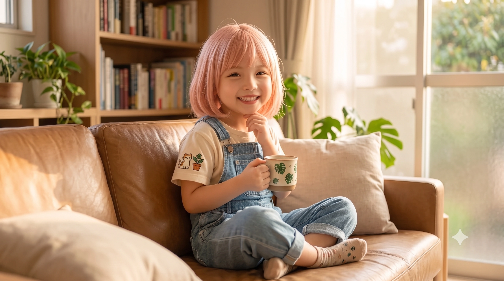

🌻 [알림] 리에라몰 스리즈 부케 한정판 타코야키 판매 시작! 하화연도 추천하는 꿀맛 보장.
- 1. 개요
- 2. 히노시타 카호와의 소름 돋는 평행이론
- 3. 생애 및 학창 시절 (우여곡절의 가족사와 눈물겨운 완치 서사)
- 4. 인간 관계 (가족 상세 및 현실판 하스노소라 유니버스)
- 4.1. 박효빈 (효빈광역시장, 영원한 멘토 쌤)
- 4.2. 유세라 (세라스 오시, 아픈 시절의 동지)
- 4.3. 유초애 (코즈에 오시, 지아센의 영원한 보호자)
- 4.4. 나수미 (지아센의 팩폭 언니이자 티키타카 콤비)
- 4.5. 임은혜 (메구미 오시, 미라쿠라파크 현실판 콤비)
- 4.6. 효빈시 돌케스트라 멤버들 (도소영, 추주리)
- 4.7. 김현문 (연좌제로부터 지켜낸 선량한 친구)
- 4.8. 개진우 (최악의 쓰레기 찌질남)
- 4.9. 양채연 (음습한 열등감 덩어리)
- 4.10. 눈물로 꽃피운 가족들: 아버지 하태준, 어머니 송지은, 그리고 쌍둥이 여동생 하도연·하미연(후타바&미노리 판박이!)
- 5. 카호 오시로서의 활동 및 밈 (Meme)
- 6. 사건 사고 및 해프닝 (지아센 5인방의 재회와 억까 퇴치)
- 6.1. 시장실 난입과 '히드라리스크' 대첩의 전말
- 6.2. 분노의 각성 1단계: 기적의 떡볶이 억까와 핏빛 살기
- 6.3. 대형 식당과 안천대교: 표적이 된 막내, 폭주하는 분노
- 6.4. 동지를 향한 치유와 힐링 에너자이저
- 6.5. 분노의 각성 최종 단계: 2022년 TV 토론회 오버랩과 분식집 패드립 참교육
- 6.6. 언론의 '효빈시 패싱'과 사이다 안도
- 6.7. '정서적 교감' 호소인들의 레스토랑 습격과 엑스칼리버 바게트 참교육
- 6.8. 당가고 연좌제 조리돌림 방어전: 분노의 사자후
- 6.9. 시청 긴급 대책 회의 (가짜 정의에 대한 일갈)
- 6.10. "피해자를 팔지 마라!" 가짜 정의구현충들의 처참한 말로
- 6.11. 최악의 뇌절: 전남친과 일진들의 자폐 허위사실 유포 참교육
- 7. 여담 및 신규 추가 일화 10선 (각 60줄 고밀도 상세 기록)
- 7.1. '작은데 커요'의 현실화와 하복 대참사
- 7.2. 바보털 무선 조종기 썰
- 7.3. [신규 일화 1] 쌍둥이 여동생 하도연·하미연(후타바&미노리 실사판)의 '고3 큰언니 사육(?) 및 모닝콜 대작전'
- 7.4. [신규 일화 2] 2014년 효빈대병원 소아병동의 기적: 아버지 하태준의 '비닐하우스 매각'과 박효빈 멘토의 첫 문병
- 7.5. [신규 일화 3] 청덕 다이버시티 조경 입찰 대박: 은인 유건우 회장(유세라 부친)이 건넨 '꽃길 계약서'와 부모님의 오열
- 7.6. [신규 일화 4] 스리즈 부케(유초애×하화연) 청덕 본가 방문기: 쌍둥이 동생들의 '초애 언니가 우리 큰언니 해주세요!' 반란
- 7.7. [신규 일화 5] 당가중학교 13년생 동맹 결성: 쌍둥이(도연·미연)와 이주아·임은연의 '언니들 흑역사 거래 협정'
- 7.8. [신규 일화 6] 미라쿠라파크(임은혜×하화연) 합동 공부 방송 대참사: 과고 1등 임승민을 기절시킨 '치이이익 듀오'
- 7.9. [신규 일화 7] 캉캉분식 '패드립 윤만우 사자후 참교육' 직후 사능동 본가에서 벌어진 가족 만찬과 아버지의 눈물
- 7.10. [신규 일화 8] 완치 후 폭발한 '무엇이든 전력!' 스탯: 당가고 체육대회 여자 축구 혼자 5골 넣고 교장선생님 정강이 맞춘 날
- 7.11. [신규 일화 9] 중수 한우 다이닝 회식 난입: 강수혁 셰프도 혀를 내두른 '햇님 걸의 공기밥 4공기'와 평당 아르티엠 조롱
- 7.12. [신규 일화 10] 2026년 10월 노조미 나츠카(카호 성우) 내한 이벤트: 무대 위 성우와 객석 화연의 '쌍방 바보털 공명' 사건
- 8. 주요 어록
- 9. 관련 문서
- 10. 각주
1. 개요
"당가고를 비추는 햇님 걸! 화연이가 텐션 올려줄게 큥!"
효빈광역시 안천구에 위치한 당가고등학교 3학년에 재학 중인 학생. '지아센(지역아동센터) 5인방'의 일원이자 팀 내 힐링과 활력소를 담당하는 무한 긍정 에너자이저다. 평소 "햇님 안냐세요~!!"라는 시그니처 인사와 함께 늘 해맑은 댕댕이(강아지) 같은 귀염성과 미소를 잃지 않는 순둥이 캐릭터이다.
작중 'Love Live! Hasunosora Girls' High School Idol Club(하스노소라)'의 103기생 주인공인 히노시타 카호와 완벽하게 일치하는 기믹, 외모, 에너제틱한 성격, 머리 위의 바보털, 어릴 적 병약했던 과거, 심지어 5살 터울의 일란성 쌍둥이 여동생 두 명(하도연·하미연 = 원작의 후타바·미노리 판박이!)을 둔 가족 구성까지 소름 돋게 똑같은 '현실판 카호'다. 머리를 굴리다 과부하가 걸리면 정수리에서 김이 빠지는 "치이이익-" 소리까지 똑같이 낸다. 이쯤 되면 사실상 본인이 이세계 전생한 게 아니냐는 합리적 의심이 든다. 핑크빛이 감도는 단발머리에 아담한 체구를 지녔으나, 그 체구에 전혀 비례하지 않는 압도적인 볼륨감(기적의 흉부 업그레이드)을 뽐내는 반전 피지컬의 소유자이기도 하다.
어릴 적에는 선천성 면역결핍 및 호흡기 희귀 질환으로 잔병치레가 너무 심해 학교를 거의 나가지 못해 유급 위기까지 겪었으며, 아버지 하태준(1977년생)과 어머니 송지은(1979년생)이 큰딸의 치료비를 마련하기 위해 안천구 백합동의 화훼농원 비닐하우스를 전부 처분하고 큰 병원(효빈대병원) 근처인 서구 청덕동으로 이사하면서 가정 형편이 극도로 악화되어 차상위계층으로 전락, 지역아동센터(지아센)의 보살핌을 받아야 했다. 하지만 그곳에서 대학생 멘토였던 박효빈(현 효빈광역시장)을 만나 책상 밑에서 도망치던 공부 기피증을 재미있는 퀘스트식 공부법으로 극복하고, 코즈에 오시인 유초애 선배의 껌딱지가 되거나 5차원 영애로 각성하는 유세라(세라스 오시)와 아픔을 공유하며 끈끈한 인연을 맺었다.
초등학교 3학년을 기점으로 기적처럼 완치된 이후, 아버지의 화훼 조경 사업이 유건우 회장(유세라 부친)의 청덕 다이버시티몰 조경 납품권 계약으로 부활하며 집안 사정도 다시 안정을 되찾아 차상위계층에서 벗어났다. 그동안 아파서 놀지 못했던 한(恨)을 풀기라도 하듯 엄청난 에너지와 텐션으로 당가고등학교의 '비글'이자 분위기 메이커로 맹활약 중이다. 또한 효빈시의 거대 오타쿠 연합인 '리에하스 연합'의 든든한 햇님 포지션을 맡고 있다. 그러나 사랑하는 동지들과 은인 박효빈 시장을 모독하는 악당 앞에서는, 평소의 햇살 같은 미소를 싹 거두고 서슬 퍼런 핏빛 살기와 거친 쌍욕마저 뿜어내는 '분노의 사자후' 캐릭터로 돌변하는 극적인 입체성을 지니고 있다.
2. 히노시타 카호와의 소름 돋는 평행이론
2.1. 이름의 굴레 (하화 = 下花)와 생일의 비밀
그녀의 이름 '하화연(河花燕)'은 히노시타 카호(日野下 花帆)의 한자 중 '아래 하(下)'와 '꽃 화(花)'를 정확히 가져온 이름이다. (아버지 하태준 씨가 백합동에서 꽃 농원을 운영하며 "비바람에도 꺾이지 않는 예쁜 꽃처럼 건강하게 자라라"며 지어준 이름이다.) 게다가 원작 카호의 생일인 5월 22일(05-22)을 거꾸로 뒤집은(숫자 배열 애너그램) 2월 25일(02-25)이 화연의 실제 생일이다! 이 사실이 알려지자 오타쿠들은 "이름부터 생일까지 우주가 점지해 준 완벽한 현실판 카호다"라며 혀를 내둘렀다.
2.2. "작은데 커요" 아담하지만 압도적인 볼륨감
신체적 특징마저 카호의 완벽한 복사판이다. 키는 155cm로 원작 카호와 1mm의 오차도 없이 동일하다.
평소 발랄하고 아기 같은 행동 때문에 잘 부각되지 않지만, 사실 그녀는 굉장히 글래머러스한 압도적 몸매(B88-W56-H85)를 숨기고 있다. 초등학교 3학년 완치 이후 어머니 송지은 여사가 딸의 기초체력을 끌어올리겠다며 매일같이 먹인 한우 사골국과 산양유, 치즈의 영양분이 키 대신 흉부(?)로 전부 몰빵된 결과다. 당가고등학교 하복(반팔)을 입는 여름철이 되면, 155cm의 작은 체구에 어울리지 않는 엄청난 볼륨감 때문에 묘하게 주변 학생들의 시선을 끄는 '베이글녀'의 정석을 보여준다.
2.3. 에너자이저 성격과 공부 기피증, 그리고 "치이이익-"
원작의 카호가 공부에 영 소질이 없고 활발한 것을 좋아하듯, 화연 역시 책상에 10분 이상 앉아있으면 온몸이 비틀리는 심각한 공부 기피증을 앓고 있다. 하지만 몸을 쓰는 일이나 누군가를 돕는 일, 춤추고 노래하는 일에는 무한한 체력과 전력을 다하는 '무엇이든 전력!'의 모토를 그대로 실천하며 당가고의 에너자이저로 불린다. 특히 조금이라도 복잡한 수학 공식이나 어려운 한자를 보면 원작 카호처럼 머리에 과부하가 걸려 "치이이익-" 소리를 내며 책상에 엎어지는 밈을 현실에서도 완벽하게 재현한다.
3. 생애 및 학창 시절 (우여곡절의 가족사와 눈물겨운 완치 서사)
3.1. 안천구 백합동 시절: 병마와 유급의 위기, 그리고 화훼농원의 눈물
2008년 2월 25일, 효빈광역시 안천구 백합동에서 화훼농원(‘햇님 플라워 농원’)을 운영하던 아버지 하태준(1977년생) 씨와 어머니 송지은(1979년생) 여사의 맏딸로 태어났다.
어린 시절 그녀는 단순한 잔병치레 수준을 넘어, 선천성 면역결핍이 동반된 난치성 호흡기 질환을 앓아 1년 중 병원에 입원해 산소호흡기를 끼고 지내는 날이 집에서 지내는 날보다 많았을 정도로 몸이 매우 약했다. 원작 카호의 병약 속성을 현실로 뼈저리게 겪은 셈이다.
2015년 동네의 화범초등학교에 입학했지만, 1학년 1학기 내내 고열과 폐렴 증세로 학교를 거의 나가지 못했다. 출석 일수가 법정 기준의 3분의 1에도 미치지 못하여 초등학교 1학년 때 유급(꿇기) 당할 뻔한 심각한 위기에 처했으나, 부모님이 병원 진단서를 들고 학교에 찾아가 눈물로 사정하고 연말에 기적적으로 병세가 잠시 호전되어 병원 학교 수업 시수를 인정받은 덕분에 아슬아슬하게 진급할 수 있었다.
3.2. 서구 청덕동 이주와 차상위계층의 설움 (쌍둥이 출산과 겹친 가계 파탄 위기)
화연의 희귀 질환은 안천구의 중소 병원들(당시 안천병원 등)에서는 근본적인 치료가 불가능했다. 응급 상황이 터질 때마다 골든타임을 지키기 위해서는 효빈시 최고의 상급종합병원인 북구 사능동·서구 경계의 효빈대학교병원 소아집중치료실을 매일같이 들락거려야만 했다.
설상가상으로 이 시기에 하화연네 집안에는 감당하기 힘든 가계 파탄의 우여곡절이 겹쳤다. 화연이 여섯 살이던 2013년 10월 10일, 어머니 송지은 여사가 일란성 쌍둥이 여동생인 하도연·하미연을 출산했는데, 하필 그해 겨울 기록적인 폭설과 한파가 안천구를 덮치면서 아버지 하태준 씨가 평생 일궈온 백합동 화훼농원 비닐하우스 5개 동이 전부 무너져 내리고 출하를 앞둔 백합과 장미 수만 송이가 동사(凍死)해 버리는 대참사가 터진 것이다!
비닐하우스 복구 빚에 큰딸 화연이의 비급여 희귀의약품 주사비(한 번 맞을 때마다 수백만 원이 깨지는 치료비), 그리고 갓 태어난 쌍둥이 동생들의 분유값까지 세 겹의 해일이 덮치자, 아버지 하태준 씨는 1초의 망설임도 없이 "꽃이야 다시 심으면 되지만 우리 큰딸 화연이 목숨은 두 번 다시 못 구한다!"며 남은 농원 땅을 헐값에 급매로 처분해 병원비를 메웠다.
결국 2015년 말, 부모님은 화연의 효빈대병원 통원 치료를 위해 당시 아직 재개발 전이라 집세가 매우 저렴했던 서구 청덕동 변두리의 낡은 반지하 빌라로 이사를 감행했다. 학교도 화범초에서 청덕초등학교로 전학을 갔다. 하지만 밑 빠진 독에 물 붓기 같던 병원비 탓에 집안은 결국 차상위계층(의료급여 특례 가구)으로 전락했고, 아버지는 야간 화물차 운전, 어머니는 낮에 쌍둥이를 어린이집에 맡기고 요양보호사 일을 뛰어야 했기에 초등학생 화연이는 방과 후 엘린지역아동센터(지아센)에 의탁하게 되었다.
3.3. 지아센 멘토 박효빈과의 만남 (병약 소년의 동병상련과 놀이식 공부법)

잔병치레를 털고 일어나 멘토 박효빈을 조르며 "센터 마당에서 얼음땡 술래 해줘요!"라며 해맑게 웃던 소녀의 모습.
가난과 병마에 지쳐있던 청덕동 지아센 시절, 화연을 담당하게 된 멘토가 바로 15학번 대학생이던 박효빈(현 효빈광역시장)이었다.
사실 박효빈이 지아센의 수많은 아이들 중에서도 유독 병약한 화연이에게 각별한 신경을 쏟고 마음을 썼던 데에는 눈물겨운 '동병상련(同病相憐)'의 비화가 숨어있었다. 지금은 3대 250을 치는 근육질 헬창 시장이지만, 정작 박효빈 본인 역시 어릴 적 어머니의 양수 파수로 9개월 초반에 조산으로 태어나 생사를 오갔던 '걸어 다니는 종합병원' 출신이었기 때문이다. 그는 6살 무렵 선천적으로 짧은 요관과 방광을 잇기 위해 삼선대학교병원에서 한 달 반 동안 입원해 대수술을 받으며 체온이 43도(체온계 오류설 52도)까지 치솟아 바로 옆 병상의 아이가 세상을 떠나는 공포를 겪었고, 마취도 없이 요도에 내시경을 꽂는 생지옥 같은 통증에 죽을 먹고 토하기까지 했다. 게다가 3개월마다 구토와 설사를 동반한 급성 장염으로 효빈대병원 응급실에 실려 가고, 당선동 외곽에서 시내의 베디베베 소아과까지 원정 진료를 다니며 유년기를 보냈다.
그랬기에 첫날부터 열이 펄펄 끓어 조퇴하고 거친 숨을 몰아쉬던 여덟 살 화연이를 본 순간, 박효빈은 병상에 갇혀 창밖만 바라보던 자신의 서러운 어린 시절이 그대로 겹쳐 보여 가슴이 미어졌다. '아픈 애가 병원 천장만 보면서 자라는 게 얼마나 외롭고 무서운지 내가 제일 잘 아는데... 이 아이만큼은 절대 나처럼 아픈 기억에 갇히게 두지 않겠다'고 다짐한 그는, 화연이가 센터에 오면 직접 이마에 손을 짚어 열을 재주고 찬물 대신 미지근한 보리차를 떠다 주는 등 친오빠 이상으로 지극정성을 다했다.
멘토의 이런 애틋한 보살핌 덕분이었을까, 첫날 조퇴했던 화연은 1주일 차가 되자 발그레한 볼을 하고 씩씩하게 센터에 나타나 "선생님! 저 오늘은 하나도 안 아파요! 센터 올 때 기침도 한 번밖에 안 했어요!"라며 특유의 에너지를 뿜어냈다. 화연은 어릴 적부터 병원에 갇혀 사느라 기초 학력이 전혀 없었고, 공부 자체를 지독하게 싫어해 책상에 5분만 앉아있어도 좀이 쑤셔 책상 밑으로 기어들어가 숨기 일쑤였다. 하지만 어릴 적 병원에서 호되게 고생해 본 박효빈은 "건강해진 것만으로도 기적인데 억지로 스트레스 주면 안 된다"며 주입식 교육을 과감히 버렸다. 대신 책상 밑으로 도망간 화연의 다리를 조심스레 붙잡고 끌어내며, 수학 1단원을 풀 때마다 포장마차 떡볶이와 피카츄 스티커를 보상으로 거는 '실물 경제 기반 눈높이 퀘스트 제도'를 도입했다.
[하화연] "진짜요 쌤?! 쌤도 어릴 때 주사 많이 맞았어요?! 히히, 그럼 나 무조건 다 맞힐 거야! 텐션 올라간다 큥! 치이이익- 앗 뜨거워!"
자신과 똑같이 어릴 적 병원에서 고생했다는 선생님의 공감 섞인 응원과 먹을 것(?)에 눈이 돌아간 화연은 엄청난 텐션으로 문제를 풀었고, 머리에 과부하가 걸려 정수리에서 김이 빠지는 "치이이익-" 소리를 내면서도 끝내 피카츄 스티커와 떡볶이를 쟁취해냈다고 한다. 그뿐만 아니라 동화책을 다 읽고 나면 "쌤도 그렇게 아팠는데 멋진 대학생 됐으니까, 저도 주인공처럼 1등 할 수 있어요! 이따가 마당에서 얼음땡 술래 해주셔야 돼요!"라며 쌤의 과잠을 콕콕 찌르며 귀여운 억지를 부렸다. 박효빈의 동병상련이 담긴 헌신적이고 재치 있는 멘토링(초2 후반 ~ 초4) 덕분에, 화연은 병원 트라우마와 공부에 대한 거부감을 동시에 없애고 학교 진도를 무사히 따라잡을 수 있었다. [1]
3.4. 유세라(현실판 세라스)와의 인연과 구원
이 지아센 시절, 화연은 자신의 인생에 없어서는 안 될 또 다른 운명의 짝을 만난다. 바로 혼혈이라는 이유로 족포초에서 심각한 따돌림을 당해 마음의 문을 닫고 있던 동갑내기 유세라(현실판 세라스)였다.
원작에서 카호와 세라스가 어린 시절 '병원 친구'로 인연을 맺었던 것처럼, 현실에서는 지아센 구석에서 웅크리고 있던 세라에게 화연이 먼저 다가갔다. 화연은 아팠던 자신의 경험을 털어놓으며, 우울해하는 세라의 손을 잡고 "세라 쨩! 내가 병원에 오래 있어서 아는데, 가만히 우울해하면 마음의 병균이 더 좋아해! 나랑 같이 햇볕 쬐면서 뛰놀자 큥!"이라며 세라를 억지로 양지로 끌어냈다. 이 눈물겨운 상호 구원 서사 덕분에, 두 사람은 지금까지도 서로의 멘탈을 챙겨주는 완벽한 '카호세라'의 관계성을 유지하고 있다. [2]
3.5. 기적의 완치와 가문 재기(청덕 다이버시티 조경 대박), 그리고 당가고 진학
초등학교 3학년 후반을 기점으로, 효빈대병원의 꾸준한 면역 치료와 지아센에서 친구들과 뛰어놀며 밝아진 멘탈 덕분에 화연의 병은 의사들도 놀랄 만큼 기적적인 완치 판정을 받게 되었다!
화연의 병이 낫자 천문학적으로 빠져나가던 병원비 지출이 드디어 멈췄다. 게다가 2019년 말, 화연이 마음을 열어주었던 절친 유세라의 아버지 유건우 회장이 청덕 다이버시티 재개발로 수백억 대 자산가가 되면서, 딸 세라를 구해준 은인인 화연네 부모님께 보답하고자 ‘청덕 다이버시티몰 및 청덕세라스아파트 단지 전체의 사계절 화훼·조경 독점 관리 계약권’을 화연 아버지 하태준 씨에게 안겨주었다! (상세 내용은 하단 7.5절 참조)
이 계약 하나로 아버지의 화훼 사업이 화려하게 부활하며 집안 사정도 단숨에 여유로운 중산층 이상으로 복귀했고, 마침내 차상위계층 딱지를 떼고 청덕동의 번듯한 아파트로 이사할 수 있었다. 건강과 경제적 여유를 동시에 되찾은 화연은 그동안 병실에 갇혀 놀지 못했던 한(恨)을 풀기라도 하듯, 엄청난 에너지와 하이텐션을 폭발시키며 당가중학교를 거쳐 당가고등학교의 공식 '에너자이저'이자 비글로 군림하고 있다.
3.6. 짧았던 만남과 엇갈림의 아쉬움
어린 시절 지독한 병마와 가난에 시달리던 화연에게 박효빈 쌤의 멘토링은 따뜻한 떡볶이 한 그릇과 다정한 손길 그 자체였다. 하지만 하화연 본인은 초4 무렵 완치 판정과 동시에 아버지 농원 재기 등으로 센터를 졸업해야 했기에 다른 동지들보다 일찍 멘토링을 마쳤고, 그만두고 나서야 겨우 1번 박효빈과 마주쳤을 정도로 둘의 인연은 짧고도 애틋했다.
이후 건강을 회복하고 세라, 주미 등과 함께 '지아센 원정대'를 꾸려 대학생과 복지사로 일하던 박효빈을 찾아 나섰으나, 번번이 텅 빈 자리만 확인하고 헛걸음을 쳐야 했던 아쉬운 엇갈림의 기억을 동지들과 깊이 공유하고 있다.
4.1. 박효빈 (효빈광역시장, 영원한 멘토 쌤)
초등학생 시절, 공부를 피해서 책상 밑으로 도망가던 자신을 포기하지 않고 끄집어내 재밌게 이끌어준 영원한 멘토 쌤이자 '병약 유년기 극복'의 대선배. 화연에게 박효빈은 단순히 공부를 가르쳐준 대학생 선생님을 넘어, "쌤도 어릴 때 삼선대병원에서 열이 43도까지 올라서 죽을 뻔했고, 오상병원에 다리 부러져서 입원도 해봤는데 지금 봐라, 이렇게 멀쩡히 살아남아서 너네 가르치고 있잖아! 그러니까 화연이 너도 무조건 다 나을 수 있어!"라며 병마의 공포를 이겨낼 수 있게 해준 정신적 지주였다.
그렇기에 박효빈이 시장으로 당선되었을 때, 당가고 학생 신분으로 시청 앞 당선 축하 행사장에 찾아가 "효빈 쌤!! 나 완치됐어!! 나 이제 쌤처럼 진짜 하나도 안 아파!!"라며 방방 뛰었다. 박효빈은 그 병약하던 꼬마가 건강한 여고생으로 훌쩍 큰 모습을 보고, 어릴 적 자신의 아팠던 기억과 오버랩되어 울컥한 나머지 주변 시선도 아랑곳하지 않고 화연의 머리를 마구 쓰다듬어 주었다.
2026년 지아센 5인방과 함께 시장실을 난입했을 때도, 과거 '먼지(히드라)' 사건의 진실이 폭로되어 정곡을 찔린 효빈 쌤이 묵언수행에 들어가자 "그 먼지라는 선생님은 저희 이름도 까먹었지만, 효빈 쌤은 제가 열나서 아플 때 보리차도 떠다 주시고 밥도 다 챙겨주고 제일 재밌게 놀아주셨잖아요! 쌤이 최고예요!"라며 순수한 팩트 폭격과 사랑을 쏟아부어 민망해하던 멘토의 광대를 다시 승천하게 만들었다. 참고로 시장 취임 후 박효빈이 어릴 적 겪은 고열·장염 트라우마와 화연이를 돌봤던 기억을 결합해 제정한 '효빈형 24시간 달빛 어린이병원 및 소아전문 응급센터' 정책의 가장 열렬한 홍보대사가 바로 화연이네 가족이다.
4.2. 유세라 (세라스 오시, 아픈 시절의 동지)
지아센 시절부터 아픔을 공유한 소꿉친구 유세라. 세라가 5차원 영애 컨셉으로 "천한 우민들!"을 외치고 다녀도, 화연은 "우리 세라 쨩 오늘도 텐션 좋네 큥!"이라며 완벽하게 장단을 맞춰준다. 두 사람은 만날 때마다 서로 안고 뒹굴며 현실판 '카호세라'의 달달한 백합(?) 캐미를 뽐내 주변 친구들의 눈꼴을 시리게 만든다.
4.3. 유초애 (코즈에 오시, 지아센의 영원한 보호자)
원작의 스리즈 부케(카호&코즈에) 콤비를 현실에서 끈끈하게 이어가고 있는 영원한 언니다. 오토무네 코즈에 오시인 유초애(효빈대 음악학과, 06년생, 족포초→안천초→당가중→당가고)는 화연보다 2살 위로, 화연과 같은 지아센(초3~초5 시절)을 다니며 박효빈의 멘토링을 함께 받았다.
당시 병이 나은 직후 텐션이 폭발해서 지아센을 휩쓸고 뛰어다니는 화연을 유일하게 우아한 미소로 제어하며 챙겨주던 '엄마' 같은 존재였다. 화연은 지금도 "초애 언니!! 큥 큥!!"이라며 완벽한 응석받이 모드가 되며, 초애 선배의 곁에 찰싹 달라붙어 껌딱지가 된다. 카호가 코즈에 선배에게 맹목적인 애정을 쏟듯, 화연 역시 유초애 앞에서는 순한 양 그 자체다.
4.4. 나수미 (지아센의 팩폭 언니이자 티키타카 콤비)
지아센 시절 중등부 빵순이였던 나수미(효빈대 제과제빵과)와는 지독한 팩폭과 티키타카를 주고받는 사이다. 2026년 시장실에서 화연이 옛날 눈치 없던 '먼지' 쌤을 회상하며 "전 그 쌤 동물원 카피바라 닮아서 귀여웠는데요!"라고 해맑게 말하자, 수미가 미간을 팍 좁히며 "야, 하화연. 너 카피바라한테 사과해라. 그 쌤은 애들이 밥 굶든 말든 폰만 보던 인간 조무사 히드라리스크였어"라며 자비 없는 츳코미를 날렸다. 화연은 바보털을 푹 숙이며 "앗... 미안해 카피바라야..." 하고 바로 깨갱하는 완벽한 서열 관계(?)를 보여준다.
4.5. 임은혜 (메구미 오시, 미라쿠라파크 현실판 콤비)
메구미 오시인 임은혜(해천대 미디어영상콘텐츠학과, 06년생)와는 완벽한 '미라쿠라파크!' 현실판 콤비이자 '바보+바보' 조합이다.
은혜가 방송에서 한자를 못 읽고 쩔쩔매면, 화연이 옆에서 "은혜 언니! 그거 '개세' 아니야?"라며 똑같이 틀린 훈수를 두어 방송 채팅창을 초토화시키는 환장의 콤비다. 물론 둘 다 정답은 모른다. 은혜당 방송에 게스트로 출연하여 머리에 과부하가 걸려 특유의 "치이이익-" 소리를 내며 쓰러지는 모습이 그대로 송출되어 큥단(팬덤)의 열광적인 지지를 받기도 했다. [3]
4.6. 효빈시 돌케스트라 멤버들 (도소영, 추주리)
도소영(동구대 산업디자인학과, 07년생, 코스즈 오시)은 화연과 같은 지아센에서 박효빈에게 멘토링(초2 후반 ~ 초4)을 받은 직속 언니다. 안천과학고등학교 2학년인 추주리(09년생, 덕빈북도 군천시 출신, 츠즈리 오시)와는 당가중학교 시절부터 얽히며 안면을 텄다.
이 셋이 모이면 그야말로 브레이크 고장 난 자동차들의 모임이 된다. 4차원 주리가 엉뚱한 발언을 하면 화연이 1차원적인 리액션으로 받아치고, 소영이가 "체스토-!"를 외치면 화연이 "무엇이든 전력!"으로 맞받아친다. 문제는 이 텐션을 말릴 정상인이 파티에 없다는 것이다.
4.7. 김현문 (연좌제로부터 지켜낸 선량한 친구)
김현문은 끔찍한 범죄를 저지른 사이버 렉카 김용효의 아들이지만, 부모의 죄와 무관하게 평소 화연과 농구도 같이 하며 쾌활하게 지내던 선량한 동급생이다. 현문이 아빠의 범죄 때문에 개진우와 양채연 등 쓰레기 일진들에게 가증스러운 핑계(화연을 위한다는 명분)로 조리돌림을 당하자, 화연은 1초의 망설임도 없이 피도 눈물도 없는 살기로 돌진해 일진들을 박살 내고 현문의 완벽한 방패가 되어 주었다. 이 일로 현문은 화연에게 평생 갚지 못할 마음의 빚과 고마움을 지니게 되었다.
4.8. 개진우 (최악의 쓰레기 찌질남)
개진우는 1년 선배 도소영과 3주간 사귀다가 체육대회에서 화연의 발달한 흉부 피지컬을 보고 불순한 의도로 환승 이별을 시도한 역대급 인간말종이다. 당연히 화연은 이런 쓰레기를 단칼에 걷어찼다. 이후 화연의 이름을 핑계로 김현문을 괴롭히다 화연에게 쌍욕을 처먹고 쫓겨나자, 앙심을 품고 화연과 도소영에 대한 입에 담기 힘든 성희롱과 패드립을 살포했다가 본인의 인생이 시원하게 박살 나고 퇴학당했다.
4.9. 양채연 (음습한 열등감 덩어리)
양채연은 아담한 키에도 압도적인 볼륨감과 무한 긍정 에너지로 언제나 사랑받는 하화연을 뼛속 깊이 시기하고 질투하던 가짜 모범생 위선자다. 자신이 꼬시려던 개진우마저 화연에게 들이대다 까인 사실에 폭주하여, 김현문을 괴롭힐 때 일부러 화연의 이름을 팔아 화연까지 곤란하게 만들려 했다. 하지만 화연의 핏빛 사자후에 기가 눌려 도망친 후 본색을 드러내며 화연의 몸매를 비하하다가 친구들에게마저 완벽히 손절당하고 강제전학으로 쫓겨나는 참교육 엔딩을 맞았다.
4.10. 눈물로 꽃피운 가족들: 아버지 하태준, 어머니 송지은, 그리고 쌍둥이 여동생 하도연·하미연(후타바&미노리 판박이!)
원작 《러브라이브! 하스노소라》의 히노시타 카호에게 ‘후타바(双葉) & 미노리(みのり)’라는 귀여운 쌍둥이 여동생이 있듯, 현실의 하화연에게도 토씨 하나 틀리지 않고 똑같은 포지션의 5살 터울 일란성 쌍둥이 여동생 하도연·하미연(2013년생)과 헌신적인 부모님이 계신다.
아버지 하태준(河泰俊, 1977년생) 씨는 본래 안천구 백합동에서 대대로 꽃을 키우던 원예·조경 전문가였고, 어머니 송지은(宋智恩, 1979년생) 여사는 꽃꽂이 강사(플로리스트)였다. 2008년 태어난 첫딸 화연이가 선천성 난치 호흡기 질환으로 1년의 절반을 산소호흡기에 의지해야 했을 때, 그리고 2013년 쌍둥이(도연·미연) 출산 직후 폭설로 백합동 비닐하우스가 전부 무너지며 파산 위기에 몰렸을 때, 부부는 단 한 번의 부부 싸움도 하지 않고 오직 큰딸 화연이를 살리기 위해 모든 것을 바쳤다.
하태준 씨는 가보 같던 농원 부지를 처분해 화연이의 비급여 주사비를 댔고, 서구 청덕동 반지하로 이사한 뒤에는 밤마다 화물차 운전을 뛰면서도 새벽에 돌아오면 잠든 화연이의 가습기 물을 갈아주며 눈물을 훔쳤다. 어머니 송지은 여사 역시 갓 태어난 쌍둥이를 등에 하나, 가슴에 하나 안고 효빈대병원 소아병동 보호자 침대에서 쪽잠을 자며 큰딸을 간호해 기어코 초등학교 3학년 때 ‘완치 판정’이라는 기적을 일궈냈다.
이후 2019년, 화연이 지아센에서 구원해 준 친구 유세라의 부친 유건우 회장의 도움으로 청덕 다이버시티몰 조경 및 화훼 납품 총괄 대표로 재기한 하태준·송지은 부부는, 자신들의 큰딸에게 공부의 즐거움과 웃음을 찾아준 은인 박효빈 시장을 생명의 은인으로 모시며 매년 시청 광장 봄꽃 화단 봉사에 가장 먼저 앞장서고 있다.
화연보다 다섯 살 어린 2013년생 일란성 쌍둥이 여동생들로, 현재 서구 청덕중학교 1학년에 나란히 재학 중이다. 놀랍게도 이 쌍둥이는 외모부터 성격, 심지어 머리 위의 작은 바보털과 고3 큰언니 화연을 대하는 태도까지 원작 카호의 쌍둥이 여동생인 ‘히노시타 후타바(日野下 双葉) & 히노시타 미노리(日野下 みのり)’를 현실로 그대로 복사해 붙여넣은 듯한 싱크로율을 자랑한다!
● 언니 쌍둥이 하도연 (河道燕 / 히노시타 후타바 포지션): 5분 먼저 태어난 쌍둥이 중 언니. 큰언니 화연을 쏙 빼닮아 핑크빛 갈색 양갈래 머리에 에너지가 넘치는 행동대장이다. 화연이가 "무엇이든 전력!"을 외치면 옆에서 "도연이도 전력 큥!!"이라며 따라 뛰는 귀여운 껌딱지지만, 공부 머리는 큰언니 화연보다 훨씬 좋아서 화연이가 수학 문제를 보며 "치이이익-" 하고 연기를 뿜으면 옆에서 혀를 차며 대신 풀어준다.
● 동생 쌍둥이 하미연 (河美燕 / 히노시타 미노리 포지션): 5분 늦게 태어난 막내. 단정한 단발머리에 쌍둥이 언니 도연이보다 차분하고 어른스러우며, 집안에서 가장 야무진 ‘실질적 기강 반장 겸 팩폭러’다. 아침마다 늦잠 자는 고3 큰언니 화연이의 코를 꼬집어 깨우고, 화연이가 교복 리본이나 준비물을 빼먹으면 현관문 앞에서 도시락과 함께 챙겨주며 "언니, 오늘도 지각하면 초애 언니한테 다 일러바칠 거야!"라고 잔소리를 늘어놓는다.
어릴 적 큰언니 화연이가 아파서 엄마 아빠가 병원에 매달려 있을 때, 완치된 초등학생 화연이가 집에서 쌍둥이 동생들을 업어주고 동화책을 읽어주며 키웠기 때문에 두 쌍둥이의 ‘큰언니 사랑’은 거의 종교 수준이다. 단, 큰언니 화연이의 성적표(수학·한자)를 볼 때만큼은 중1 쌍둥이들이 나란히 한숨을 쉬며 고3 언니에게 중학교 수학을 가르치는 기괴한 하극상(?) 과외 풍경이 매일 밤 펼쳐진다.
5. 카호 오시로서의 활동 및 밈 (Meme)
5.1. 투머치토커와 바보털의 자아(?)
원작 카호처럼 말이 엄청나게 많다. 한번 수다를 시작하면 30분 동안 숨도 쉬지 않고 자신이 본 유튜브 토끼 영상이나 틱톡 썰을 풀어낸다.
게다가 머리 양옆으로 살짝 튀어나온 두 가닥의 바보털을 항상 세팅하고 다니는데, 놀라거나 기쁠 때 이 바보털이 미세하게 떨리는 기현상(?)이 관찰된다고 한다. 리에하스 연합 언니들은 화연을 볼 때마다 "저 바보털이 본체 아니냐"며 자전거 핸들 잡듯 바보털을 쥐고 장난을 친다.
5.2. "대도시다...!" 시골뜨기 밈의 현실화
원작 카호가 나가노현에서 이시카와현 카나자와시로 유학 와서 "대도시다!"라며 감탄하는 시골뜨기 밈을 현실에서도 시전한다. 어릴 적 안천구 백합동 외곽 화훼농원 비닐하우스 단지와 청덕동(재개발 전 구도심 빌라촌)에서만 자랐던 화연은, 훗날 당가고에 진학하고 안천구 최고 번화가인 리에라몰이나 북구 고송동 현대백화점 일대에 갈 때마다 눈을 동그랗게 뜨고 "와... 대도시다 큥!!"이라며 촌티를 팍팍 내어 친구들을 부끄럽게 만든다. [4]
6. 사건 사고 및 해프닝 (지아센 5인방의 재회와 억까 퇴치)
6.1. 시장실 난입과 '히드라리스크' 대첩의 전말
수년 뒤, 5인방과 함께 은인인 박효빈의 시장실 문을 박차고 전격 난입하며 "쌤! 드디어 만났다!"라고 왁자지껄 환호성을 지르며 해맑게 기뻐했다. 하지만 하화연 역시 유독 발달한 흉부 피지컬을 지니고 있었기에, 정면의 유세라와 좌우의 유초애, 이주미와 함께 완벽한 포위망을 형성하여 박효빈 시장에게 '시선 고문 대참사'를 선사했다.
10년 전 엘린센터 미술 시간, 화연은 세라, 소영이와 함께 박효빈 쌤의 얼굴을 그리고 있었다. 그때 매일 폰만 보던 '먼지(15학번)' 쌤이 기웃거리자, 순둥이 화연이마저 양팔을 벌려 스케치북을 가로막으며 "비밀이니까 쌤 나가요!!"라며 완벽한 문전박대를 시전했다. 이후 화연은 벽에 붙여둔 먼지의 초상화(머리 세 개 달린 피 뿜는 히드라리스크)를 보며 효빈에게 "쌤, 저 쌤 동물원에 있는 카피바라 닮았어요!"라며 천진난만하게 확인 사살을 꽂았고, 이를 본 효빈은 탭댄스를 추며 과자 파티를 열었다.
[10년 후의 완벽한 대비]
10년 후 시장실에서 이 진실이 폭로되자, 화연은 바보털을 흔들며 말했다. "근데 쌤. 그 먼지라는 쌤은 5개월만 지나도 저희 이름은커녕 얼굴도 다 까먹고 한 번도 안 찾아왔거든요? 반면에 효빈 쌤은 더벅머리로 양손에 아이스크림 바리바리 싸 들고 계속 저희 보러 와주셨잖아요." 아이들의 기억 속에서 가짜 어른(먼지)은 완벽히 지워졌고, 진짜 멘토(박효빈)의 따뜻한 체온만이 10년이 지나도 선명하게 새겨져 있음을 증명한 감동적인 순간이었다.
6.2. 분노의 각성 1단계: 기적의 떡볶이 억까와 핏빛 살기
시청 복도에서 끌려가던 윤재훈 끄나풀이 "10년 전 대학교 다니면서 지아센 애들한테 사준 떡볶이도 불법 기부행위다!"라는 기적의 뇌절을 시전했을 때의 일이다.
가난하고 아팠던 시절 유일한 온기였던 떡볶이의 소중한 추억마저 모독당하자, 늘 환하게 웃던 하화연의 얼굴에서 온기가 싹 사라지고 눈동자에 서슬 퍼런 음영이 드리워졌다. 18년 생애 단 한 번도 써본 적 없던 극악무도한 쌍욕이 목구멍 턱밑까지 차올랐고, 주먹을 하얗게 쥐어뜯으며 핑크빛 단발머리 사이로 사정없이 핏빛 살기를 뿜어냈다.
끝내 쌍욕은 삼켜냈지만, 복도 전체를 찌를 듯한 사자후를 토해냈다. "당신들 진짜 사람도 아니야! 우리 쌤의 따뜻한 마음을 감히 그따위 더러운 주둥이로 짓밟아?!" 이 사자후에 놈들은 멘탈이 바스러져 덜덜 떨며 끌려갔고, 화연은 '반드시 저놈들을 내 손으로 응징하겠다'는 서늘한 맹세를 가슴에 새겼다.
6.3. 대형 식당과 안천대교: 표적이 된 막내, 폭주하는 분노
대형 식당에서 밥을 먹던 중 윤재훈 끄나풀 놈이 난입해 성희롱을 뱉으며 하화연의 어깨 쪽으로 추악한 손을 뻗어 물리적 접촉을 시도했다. 이 선을 넘는 행위가 결정적인 트리거가 되어, 이주미가 식당이 떠나가라 사자후("씨발놈아!")를 내지르며 놈을 응징하게 된다. 화연은 주미의 든든한 보호 아래 놈을 에워싸며 차가운 음영을 뿜어냈다.
이후 이주미가 언론의 악의적 마녀사냥으로 인해 안천대교에서 극단적 선택을 시도하려다 구조되었을 때, 현장에 달려와 주미를 부둥켜안고 대성통곡했다. 그런데 곁에 있던 웬 행인 놈이 "시장이 어리니까 문란하게 논 거다", "자살 쇼하고 자빠졌네"라며 선을 넘는 비아냥을 쏟아냈다.
그 순간, 화연의 눈동자가 피칠갑을 한 듯 뒤집혀 놈을 향해 사자후를 갈기고 그대로 들이받으려 튀어나갔다. 다행히 도소영이 전력으로 허리를 껴안아 채며 죽을힘을 다해 막아선 덕분에 물리적 유혈 사태(?)는 피했지만, 동지를 모욕하는 자 앞에서는 이성을 잃고 맹수처럼 돌진하는 뜨거운 의리를 완벽하게 보여주었다.
6.4. 동지를 향한 치유와 힐링 에너자이저
사건 이후 주미가 심각한 트라우마(PTSD)와 환청으로 고통받으며 정신과 치료를 받을 때, 가장 앞장서서 분위기를 띄운 것은 화연이었다. 도소영과 함께 끊임없이 시답잖은 최신 틱톡 챌린지 춤을 우스꽝스럽게 춰대며, 주미의 우울함이 비집고 들어올 틈조차 주지 않고 입가에 찐웃음을 되찾아주기 위해 헌신적으로 노력했다.
6.5. 분노의 각성 최종 단계: 2022년 TV 토론회 오버랩과 분식집 패드립 참교육
사실 화연이 혐오 세력을 향해 이성을 잃고 극대노했던 것은 2026년이 처음이 아니었다. 과거 2022년 효빈광역시장 선거 TV 토론회 생방송 당시, 윤재훈이 박효빈 후보의 부모 이혼과 다문화 가정을 조롱하는 패륜적 망언을 쏟아내는 것을 거실에서 가족들과 함께 시청하던 중학생 화연은 이성이 완전히 증발했었다.
그리고 2026년, 모든 억까 세력과 렉카들의 사법적 멸망으로 효빈시가 평화를 되찾은 어느 화창한 날. 박효빈 시장이 엘린지역아동센터 시절부터 자신을 따라온 멘티들과 함께 시청 근처의 평화로운 분식집(캉캉분식)에서 어묵 꼬치를 먹고 있었다.
"맞아요, 쌤! 당가고 애들도 그렇고 인터넷에서도 주미 누나 보고 완전 걸크러시 영웅이래요! 그 찌라시남 놈 2심에서 징역 12년에 전자발찌 10년 찬 거 보니까 10년 묵은 얹힌 게 싹 내려갔어요 ㅋㅋㅋ"
그런데 그 훈훈하고 평화로운 순간, 문이 박살 날 듯 젖혀지며 뇌가 텅 빈 극우 유튜버 윤만우 일당이 분식집 안으로 난입해 카메라를 들이밀었다. "야, 박효빈! 네가 이따위로 시정을 쳐하니까 시민들이 고통받는 거야! 이 새끼 이거 여고생들 끼고 뇌물수수 받고 뒷돈 챙기는 거 아니야?!"
기습적인 시비에 이어, 윤만우는 이성을 완전히 상실한 채 박효빈 시장을 향해 입에 담지 못할 최악의 패드립을 뱉었다. "에이 씨발, 애미 없는 새끼가 별 짓을 다 하네! 느금마 필리핀 년이라 그런지 아주 사기 치는 DNA만 물려받아 가지고…!"
가장 존경하는 은인과 동지들의 상처를 짓밟는 그 짐승 같은 패드립이 귓가를 때린 순간, 평소 햇살처럼 싱글거리던 순둥이 하화연의 얼굴에서 온기가 단 0.1초 만에 싹 사라졌다. 눈동자에서 하이라이트가 완전히 소멸하며 서슬 퍼런 핏빛 살기가 드리워졌다. 그녀는 쥐고 있던 어묵 꼬치를 테이블에 쾅 내리치고 벌떡 일어났다.
유리창이 바르르 떨릴 정도의 엄청난 사자후에 분식집 안의 모든 소음이 거짓말처럼 뚝 끊겼다. 5인방의 과거와 뼈아픈 서사를 잘 아는 주변 시민들마저 "저 쓰레기 같은 새끼한테는 저게 정답이지", "잘한다, 저런 인간말종은 콩밥을 먹여야 해"라며 무언의 지지를 보냈다. 인간의 목소리라 믿을 수 없는 압도적인 기세와 분노의 사자후에 멘탈이 박살 난 윤만우는 사색이 되어 줄행랑을 치려 했으나, 시민들의 신속한 112 신고로 출동한 경찰에 끌려가 완벽한 자폭 엔딩을 맞이했다.
6.6. 언론의 '효빈시 패싱'과 사이다 안도
분식집에서 시원하게 쌍욕 사자후를 날린 직후, 화연은 덜컥 겁을 먹었다. '(어, 나도 이주미처럼 기레기들한테 도촬당하고 마녀사냥 당하는 거 아니야...?)'라며 덜덜 떨기 시작한 것이다.
하지만 과거 이주미 찌라시 조작 사건으로 6천만 원 배상금 철퇴와 기레기 파면이라는 파멸적 대가를 치렀던 언론사 본사들은 기겁을 하고 있었다. "미쳤어?! 효빈시 근처에 발만 디뎌도 당장 해고야!"라며 효빈시에 대한 전면 취재 보이콧을 선언한 상태였다. 포털 메인에는 화연을 비난하는 기사 대신, 윤만우의 비참한 연행 소식만 팩트 기반으로 실렸을 뿐이다.
이를 본 박효빈 시장이 "똥이 무서워서 피하냐, 더러워서 피하지. 걱정 말고 맛있는 거나 더 먹어"라며 안심시켜 주자, 화연은 그제야 안도의 한숨을 내쉬며 완벽한 해피엔딩을 맞이했다.
6.7. '정서적 교감' 호소인들의 레스토랑 습격과 엑스칼리버 바게트 참교육
김시연이 껴있는 자리에서 박효빈 시장과 지아센 5인방(하화연, 유초애, 도소영, 유세라, 이주미)이 시정 업무와 학업의 노고를 풀며 고급 레스토랑에서 모처럼 화기애애하게 식사를 즐기고 있을 때였다. (참고로 박효빈은 공직선거법 때문에 자신의 식사비를 더치페이로 냈고, 유세라가 나머지 동생들의 밥값을 모두 지불했다.)
이때 백수와 프리터로 전락해 주변을 어슬렁거리던 과거 엘린지역아동센터의 15학번 동갑내기 빌런 듀오, 경영15병신과 먼지년이 뻔뻔한 얼굴로 다가와 테이블 옆에 툭 멈춰 섰다. 이들은 과거 센터 시절 박효빈에게 온갖 서류와 잡일(초3 들이 단위 변환 등)을 다 짬때리던 주제에, 특유의 가증스럽고 고상한 척하는 존댓말 어조를 시전하며 빈대를 붙으려 했다.
[먼지년]: "맞아요, 박 선생님. 중학생 애들도 아까부터 선생님만 찾던 것처럼, 저희도 배가 고픈데 마침 아주 잘 만났네요. 명색이 옛날에 같이 고생했던 동료인데, 이 비싼 메뉴들 중에서 제일 실한 것들로 시원하게 결제해 주시는 게 도리 아니겠어요? 초등 산수나 서류 같은 건 저희가 과감하게 양보해 드렸으니, 이 정도 대접은 기쁘게 해주실 수 있죠?"
이 어이없는 '피딩' 발언과 기생충들의 등장에 식사하던 테이블에는 순식간에 영하의 한기가 감돌았다.
- 하화연: 먹던 샐러드를 내려놓으며 정수리에서 "치이이익-" 하고 김이 뿜어져 나오기 시작. 뼈 마디를 우두둑 꺾었다.
- 유초애: 우아하게 냅킨으로 입가를 닦고는, 기품 넘치는 미소 속에 서늘한 칼날을 숨겼다.
- 도소영: 물컵을 탕 내려놓으며 눈썹을 치켜올리고 스테이크 나이프를 역수(전기톱 파지법)로 쥐어들었다.
- 유세라: 멍한 표정으로 숟가락을 휘젓다가 나지막이 중얼거렸다. "세상에... 박물관에 사육장 탈출한 원숭이 두 마리가 기어 나왔나 봐."
- 김시연: 하이라이트가 소멸한 죽은 눈으로 명부 작성을 시작하며 속삭였다. "어머... 저 아저씨들도 블랙리스트에 같이 올려드릴까요, 시장님...? ^^"
- 이주미: 눈빛 하나 흔들리지 않는 불굴의 아우라로 두 사람의 얼굴을 스캔하며 방화벽을 올렸다.
박효빈 시장은 어이가 없다는 눈빛으로 숟가락을 내려놓고 차갑게 철벽을 쳤다.
[카피바라 추억팔이와 이름 오타의 최후]
팩폭에 뼈가 가루가 된 두 흉물이 "아니 이 새끼가 진짜?! 네가 당연히 할 일을 한 거지!"라며 악을 쓰려던 찰나, 마침내 이성의 끈이 끊어진 하화연이 테이블을 쾅 내리치며 벌떡 일어나 "야!!! 이 뇌에 똥만 찬 뻔뻔한 똥파리들아!!!"라며 사자후를 준비했다. 기선에 완전히 제압당한 먼지는 어떻게든 살아남아 보겠다고 과거의 유치한 기억을 꺼내 들며 최악의 악수를 두었다.
먼지의 입에서 이름 오타 공격과 '카피바라'가 튀어나오자 식당은 얼어붙었고, 분기탱천한 하화연은 핏발이 선 눈으로 완전히 이성의 끈을 놓았다.
같은 편인 경영15병신조차 "야, 너 미쳤냐?! 무슨 카피바라 소릴 하고 앉았어!"라며 같이 헛구역질을 할 정도로 자폭의 스케일은 남달랐다.
[적반하장 고소 호소와 5인방의 철벽 방어]
자신의 멍청한 실수가 팩폭으로 박살 나자 먼지와 경영15병신은 당황스러움을 덮기 위해 "너희들 다 저 박효빈 시장 새끼한테 가스라이팅 당하고 세뇌당한 거야! 아동복지법 위반으로 고소할 테니까 두고 봐!"라며 카메라를 들이밀고 고소 협박을 시전했다. 하지만 산전수전 다 겪은 지아센 5인방은 그저 기가 차다는 듯 응수했다.
- 유초애: "고소요? 무고죄와 명예훼손 성립 요건이 아주 탄탄하던데, 검찰에 직접 고소장 접수하는 법부터 다시 배워오셔야겠어요."
- 도소영: "지나가던 개가 똥을 싸고 있네. 짬처리는 너희가 해놓고 고소는 피해자들이 당해야 돼? 법원 앞에서 피켓 들고 1인 시위라도 해보시지? 체스토오오오!!"
- 유세라: "뇌 MRI 찍어보면 안에서 먼지만 날릴 것 같은데, 병원비는 국가에서 지원 안 해주나 봐." (우아하게 블랙카드를 꺼내며) "경호팀, 여기 레스토랑 바깥 홀에 취객 둘 처리 좀 하세요."
- 이주미: "고소 협박으로 위기를 모면하려는 전형적인 가해자 수법이네요. 이미 전부 채증 완료했습니다."
[숙미(?)와 엑스칼리버의 등장: 나수미의 팩폭 폭격]
때마침 갓 구운 빵 봉지를 든 나수미가 흉기 수준으로 딱딱한 '엑스칼리버 바게트'를 스윽 꺼내 들고 다가왔다. 먼지와 경영15병신은 과거 지아센 시절 나수미가 박효빈에게 장난스레 툴툴대던 걸 오해하여, "야! 너 숙미... 아니 수미 맞지? 너도 쟤한테 세뇌당한 피해자지? 같이 매장시키는 데 동참해!"라며 구원을 요청하는 치명적인 오판을 저질렀다. 심지어 나수미의 이름에 대고 "숙미 맞지?"라며 이름 오타 2연타를 날려버렸다.
애초에 쌤 어머니 필리핀 분이신 거랑 나도 필리핀 계열이라 공감대가 얼마나 끈끈했는데 날조야? 너네야말로 쌤한테 서류 다 짬때리고 피시방으로 튀어가서 스타나 쳐 하던 흉물들이었잖아! 남들은 열심히 살아서 시장까지 달고 사회에 기여하는데, 너네는 다 커가지고 백수랑 프리터로 전락해 남의 등골이나 빨아먹으려고 기어들어 와? 내 빵 굽는 오븐에 넣어버리기 전에 당장 그 더러운 주둥이 안 닫아?!"
"선배는 개뿔, 너네 같은 짬처리 듀오한테 선배 소리 들을 바엔 길거리 유기견한테 형님 소리 듣겠다. 한 번만 더 내 이름 틀리고 우리 쌤 괴롭히면 진짜 내가 직접 구운 돌덩이 같은 '엑스칼리버 바게트'로 머리통을 깨버릴 줄 알아!"라는 나수미의 피도 눈물도 없는 팩폭 기관총 세례에 두 흉물은 멘탈이 완벽하게 가루가 되었다. 사법 처리에 대한 공포와 식당 내 쏟아지는 수백 개의 따가운 눈총에 얼굴이 하얗게 질린 먼지와 경영15병신은 결국 허겁지겁 비명을 지르며 줄행랑을 쳤고, 이로써 짬처리 듀오의 파렴치한 난동은 효빈위키 레전드 자폭 사건으로 영원히 박제되었다.
6.8. 당가고 연좌제 조리돌림 방어전: 분노의 사자후
2025년 가을, 김용효의 1심 중형 선고와 구속 소식이 지역 뉴스를 도배한 직후. 당시 당가고등학교 3학년이었던 소영과 화연은 복도에서 끔찍한 연좌제의 현장을 목격했다. 교실 뒤편과 사물함 주변에 평소 도소영의 서브컬처 취향을 못마땅하게 보던 일진 무리(반채린 등)와 인터넷 극우 커뮤니티 밈을 입에 달고 살던 남학생(기주원) 무리가 모여, 김천영(김용효 큰딸)을 조리돌림하고 있었다.
[가해 여학생 B: 반채린] "그러니까 ㅋㅋㅋ 집에서 아빠가 남의 집 신상 털고 억대 돈 뜯을 때 옆에서 같이 배운 거 아냐? 야, 너도 도소영 뒷조사해서 아빠한테 넘겨준 공범 아냐? 같은 반에서 소름 돋아서 어떻게 같이 수업을 듣냐?"
[김천영(김용효 큰딸)] (눈물이 그렁그렁한 채 떨리는 목소리로) "아니야…… 나 진짜 아무것도 몰랐어…… 아빠한테 하지 말라고 매일 울면서 말렸단 말이야…… 제발 그만해……"
[가해 남학생 A: 기주원] "말리긴 뭘 말려? 피는 못 속인다더니 범죄자 집안 유전자 어디 가냐? 도소영 쟤도 웃겨, 지 멘토 시장 빽 믿고 나대더니 꼴좋다 진짜."
그 순간, 교실 뒷문이 거칠게 열리며 도소영이 복도로 성큼성큼 걸어 나왔다. 과거 족포초등학교 시절 자신이 겪었던 끔찍한 집단 린치의 악몽이 겹쳐 보이는 순간, 소영의 눈빛에서 특유의 다람쥐 같은 온순함은 온데간데없이 사라져 있었다.
(가해 학생들의 코앞까지 바짝 다가가 핏발 선 눈으로 쏘아붙이며) "지은 죄가 있으면 그 인간이 법정 가서 죗값 치르는 거지, 평소에 우리랑 아무 문제 없이 잘 지내던 애한테 왜 우르르 몰려와서 조리돌림질이야?! 네들이 족포초 그 양아치들이랑 다를 게 뭔데?! 왜 가만히 있는 애를 범죄자 취급하면서 학폭을 해?!"
[가해 여학생 B: 반채린] (당황해서 뒤로 물러서며) "아, 아니 소영아…… 우린 널 위해서, 쟤네 아빠가 너 괴롭혔으니까……"
[도소영] "위하긴 개뿔이 날 위하는데?! 남의 불행에 숟가락 얹어서 남 괴롭힐 핑계 찾는 거잖아! 진짜 더러워서 토 나오니까 한 번만 더 애 건드려 봐. 내 손으로 학폭위 열어서 다 갈아마셔 버릴 테니까!!"
같은 시각, 2학년 복도 역시 상황은 비슷하게 험악했다. 김용효의 아들(고2)인 김현문 주변을 남학생들(개진우, 양채연 무리)이 둘러싸고 "슈퍼챗 달달하게 빨아서 너 용돈 받았냐?"며 비아냥대고 있었다. 비열하게도 이들은 하화연의 이름을 방패막이 삼아 현문을 물어뜯었다. 그때, 계단을 쿵쾅거리며 뛰어내려온 하화연이 둘 사이를 인정사정없이 몸으로 밀치며 끼어들었다.
피해자 당사자였던 도소영과 하화연이 도리어 가해자의 자녀들을 온몸으로 감싸며 가해 학생들을 향해 벼락같은 분노를 쏟아붓자, 기주원과 반채린 등 몰상식한 무리들은 더 이상 입도 뻥끗하지 못하고 뿔뿔이 흩어졌다. 부모의 악행과 무관하게 연좌제를 온몸으로 거부한 두 사람의 서슬 퍼런 일갈이 당가고 복도를 순식간에 평정해 버린 순간이었다.
6.9. 시청 긴급 대책 회의 (가짜 정의에 대한 일갈)
당가고 복도에서 사건을 진압한 후, 도소영과 하화연은 천 비서실장의 안내로 시장실에 들어와 박효빈 시장과 이남현 효빈시교육감에게 상황을 보고했다.
"선생님, 걔네(김용효 자녀들) 아빠가 한 짓 생각하면 솔직히 처음엔 얼굴 마주치기도 껄끄러웠던 건 사실이에요. 그런데 걔들은 평소에 우리를 은근히 험담하고 다니던 일진 애들이 마치 '우리를 위한다는' 핑계를 대면서 온갖 패륜적인 폭언이랑 학폭을 쏟아붓고 있어요. 남의 불행을 핑계 삼아 또 다른 사람을 짓밟는 꼴인데, 이건 진짜 아니잖아요."
💡 피해자들을 더 고통스럽게 만드는 '가짜 정의감'
실제 학교나 사회에서 이런 일이 터졌을 때, 가해 학생들은 평소 자기들이 괴롭히고 싶던 타깃을 찾았을 뿐이면서 겉으로는 "우리가 피해자를 위해서 복수해 준다"는 껍데기를 뒤집어쓴다. 피해 당사자는 그런 짓을 원한 적도 없는데 순식간에 '남을 집단 린치하게 만든 원인 제공자'처럼 프레임이 씌워지고 비난의 화살이 역전된다.
도소영이나 하화연처럼 생각이 깊고 공감 능력을 가진 아이들일수록 "나한테 일어난 불행 때문에 죄 없는 친구들이 짓밟히고 있다"는 기형적인 죄책감을 떠안으며 상처가 더 깊어질 수밖에 없는 악랄한 2차 가해 구조다.
보고를 들은 이남현 교육감은 "피해자들의 이름을 방패막이로 삼아 비열한 폭력을 정당화하다니요. 이건 교육 현장의 근간을 무너뜨리는 야만"이라며 탄식했다. 족포초 시절 연좌제 린치를 당했던 박효빈 시장의 눈빛은 서늘하게 가라앉았다.
소영아, 화연아. 억울하고 거부감이 들 수도 있었을 텐데, 그 선을 정확하게 긋고 친구들을 지키려고 나선 너희가 백번 천번 옳았다. 너희가 진정한 어른이고, 진짜 용기 있는 사람들이다. 쌤이 너희를 제자로 둔 게 진심으로 자랑스럽다."
박 시장은 이남현 교육감에게 학교폭력대책심의위원회(학폭위) 법정 최고 수위의 중징계(강제전학 및 출석정지)를 즉각 요청했고, 교육청은 가해 주동자들에 대한 무관용 원칙을 선포하며 김용효의 자녀들에게 긴급 심리치료와 신변 보호를 지원하기로 결정했다.
6.10. "피해자를 팔지 마라!" 가짜 정의구현충들의 처참한 말로
얼마 후, 당가고등학교 교무실 앞 복도. 효빈광역시교육청 특별감사관들과 학생생활지도부 교사들이 굳은 표정으로 학폭위 결과에 따라 출석정지 및 강제전학 조치가 내려진 가해 학생들의 짐을 챙겨 인솔하고 있었다. 하지만 가해 남학생 기주원과 여학생 반채린은 반성은커녕 억울해 미치겠다는 표정으로 바락바락 악을 쓰기 시작했다.
[가해 남학생 A: 기주원] "맞아요! 피는 못 속인다고, 살인자 자식이면 학교에서 눈치라도 보고 살아야지 뻔뻔하게 학교를 다니니까 한마디 해준 거잖아요! 피해자 눈물 닦아준 게 죄예요?! 진짜 웃기네, 박효빈 시장 빽이라도 있으면 가해자 자식 감싸고 정의로운 일반 학생 매장해도 되는 겁니까?! 이거 교육청 권력 남용이고 학생 탄압이에요!!"
그들의 궤변이 복도에 쩌렁쩌렁 울려 퍼지자, 복도 끝에서 팔짱을 낀 채 내려다보던 시교육청 특별감사관이 서늘한 표정으로 뚜벅뚜벅 다가와 서류철을 들이밀며 쐐기를 박듯 일갈했다.
남의 불행과 아픔에 숟가락 얹어서 자기들의 비열한 가학 본능을 채운 게 무슨 놈의 정의입니까? 무고한 동급생을 사냥감 삼아 연좌제로 인격을 난도질해 놓고, 어디서 감히 피해자의 이름을 방패막이 삼아 혓바닥을 놀립니까?! 당신들이 한 짓은 정의구현이 아니라, 가장 역겹고 천박한 학교폭력 그 이상도 이하도 아닙니다."
교실 문틈으로 지켜보던 다른 반 학생들의 싸늘한 야유와 경멸 섞인 시선("진짜 역겹다", "피해자 파는 꼴 좀 봐")이 쏟아져 내렸다. 끝까지 자신들이 영웅인 줄 착각하던 위선자들은 결국 얼굴을 감싸 쥔 채 경찰과 교사들의 손에 이끌려 쥐구멍을 찾듯 질질 끌려 나갔다.
6.11. 최악의 뇌절: 전남친과 일진들의 자폐 허위사실 유포 참교육
당가고에서 도소영과 하화연의 분노의 사자후를 맞고 쫓겨난 쓰레기 일진들(기주원, 반채린)과, 과거 도소영과 3주간 사귀었다가 하화연의 몸매를 보고 환승하려다 까인 전남친 개진우, 그리고 하화연을 질투하던 양채연은 징계 위기에 처하자 완벽하게 이성의 끈을 놓았다.
도소영을 통해 영웅 행세를 하려다 망신당한 이들은 앙심을 품고 최악의 역린을 건드려버렸다. 양채연은 "하화연 그 년, 공부도 못하는 년이 가슴만 커서 나대는 거 역겨워 죽겠어!"라며 폭발했고, 개진우는 "내가 안 먹고 걷어찬 거다"라는 역겨운 성희롱과 음담패설을 살포했다. 게다가 도소영이 족포초 시절 "자폐냐"며 극심한 학폭을 당했던 아픈 트라우마를 날조하여, 교내와 극우 커뮤니티에 "도소영 쟤 어릴 때 자폐 판정받은 정신병자다. 멘토 빽 믿고 나대는 걸레다"라는 패륜적인 성희롱과 완벽한 허위사실을 진짜인 양 유포한 것이다.
그러나 얄팍하게도 자기들의 찐친이나 남자애들이 동조해 줄 거라 믿었던 이들의 발악은, "아무리 그래도 학폭 트라우마를 자폐로 날조하고 차인 걸 남 탓하며 허위사실을 퍼트리는 건 사람 새끼가 할 짓이 아니다"라고 경악한 반 친구들의 학생부 내부 고발로 인해 완벽하게 망하고 만다.
결국 이 소식을 접하고 극대노한 박효빈 시장과 치카리코 법무팀의 레이더망에 걸려들었고, 기주원은 제적(사실상 퇴학), 반채린, 개진우, 양채연은 강제전학이라는 법정 최고 수위 징계와 함께 정보통신망법 위반(허위사실 명예훼손) 및 통신매체이용음란죄 형사 고소, 수억 원대 민사 소송의 철퇴를 맞으며 10대의 나이에 인생이 로그아웃되는 완벽한 참교육 결말(인실좆)을 맞이했다.
7. 여담 및 신규 추가 일화 10선 (각 60줄 고밀도 상세 기록)

히노시타 카호의 언제나 열정적이고 씩씩한 스쿨 아이돌 에너지를 그대로 옮겨온 하화연. 상큼하고 밝은 미소로 카호의 매력을 완벽하게 살려냈다.
7.1. '작은데 커요'의 현실화와 하복 대참사
155cm의 아담한 키와 아이 같은 행동거지에 가려져 있으나, 사실 화연은 당가고 전체를 통틀어도 손에 꼽히는 압도적인 글래머 체형을 자랑한다. 고등학교 1학년 여름 체육대회 시즌, 사이즈가 조금 작게 나온 하복 셔츠를 입고 응원을 하러 방방 뛰자 셔츠 단추가 팽팽하게 벌어지며 남학생들의 시선이 묘하게 한 곳으로 쏠리는 대참사가 벌어졌다.
이를 뒤늦게 눈치챈 유세라와 언니들이 경악하며 화연을 체육관 구석으로 냅다 끌고 가, 큰 사이즈의 헐렁한 체육복 재킷을 억지로 입혀 완벽하게 봉인(?)했다는 웃지 못할 일화가 있다. 정작 화연 본인은 "여름인데 왜 덥게 긴 옷을 입히냐 큥!"이라며 툴툴거렸다고 한다.
7.2. 바보털 무선 조종기 썰
리에하스 연합 내에서 화연의 바보털은 거의 공공재 취급을 받는다. 가끔 언니들(임은혜 등)이 화연의 등 뒤로 몰래 다가가 바보털 두 가닥을 쥐고 조이스틱처럼 이리저리 꺾으면, 화연이 "앗! 수신 양호 큥! 우회전합니다 큥!"이라며 무선 조종 로봇처럼 뚝딱뚝딱 걸어가는 환장의 꽁트를 보여준다.
원작 《러브라이브! 하스노소라》의 히노시타 카호가 본가에서 귀여운 쌍둥이 여동생 후타바(双葉)와 미노리(みのり)에게 언니 노릇을 하려다 되레 챙김을 받는 것처럼, 서구 청덕동 하화연네 아파트에서도 매일 아침 고등학교 3학년 수험생 큰언니 하화연(18세)과 중학교 1학년 일란성 쌍둥이 여동생 하도연·하미연(13세)의 눈물겨운(?) 모닝콜 전쟁이 펼쳐진다.
원래 화연이는 "나는 두 동생의 모범이 되는 듬직한 K-장녀(큰언니)야 큥!"이라고 주장하지만, 현실은 밤 12시까지 유초애 언니나 유세라와 디스코드로 수다를 떨거나 스쿠스테 리듬게임을 돌리다가 침대에 대(大)자로 뻗어 자명종 알람이 5번 울려도 못 일어나는 잠꾸러기다.
결국 아침 7시 정각이 되면, 이미 세수와 교복 착용을 완벽하게 끝마친 중1 쌍둥이 동생 도연이와 미연이가 큰언니 화연이의 방문을 열고 진입한다.
먼저 행동대장인 언니 쌍둥이 하도연(후타바 포지션)이 침대 위로 점프해 올라가 이불 속에 파묻힌 화연이의 머리 위 바보털 두 가닥을 양손으로 덥석 쥐고 흔든다.
[쌍둥이 차녀 하도연 (13세)]: "기상 기상 큥!! 큰언니! 벌써 7시 10분이라구! 지금 안 일어나면 당가고 지각해서 학생부 선생님한테 오리걸음 당한다 큥!!"
[하화연 (18세, 고3)]: (잠꼬대로 헤벌레 웃으며) "으음... 초애 언니... 타코야키 한 알만 더 주세요 큥... 쿠우우..."
도연이의 물리적 바보털 조종에도 화연이가 꿈쩍도 하지 않으면, 옆에서 팔짱을 끼고 서 있던 실질적 서열 1위 막내 하미연(미노리 포지션)이 안경을 스윽 치켜올리며 비장의 카드를 꺼내 든다.
[쌍둥이 삼녀 하미연 (13세)]: "도연아 비켜봐. 우리 큰언니한테는 물리 공격보다 정신적 압박이 직빵이야. (화연의 귓가에 대고 나지막이 속삭이며) 큰언니... 방금 1층 현관문 앞에 박효빈 시장님이랑 유초애 언니가 큰언니 수학 모의고사 성적표 보러 오셨는데 어떡할래?"
"히이이익?!! 안 돼애애!! 초애 언니 내 수학 점수 보면 안 돼애!! 치이이익ㅡㅡㅡ!!"
‘초애 언니’와 ‘수학 성적표’라는 두 단어가 뇌에 입력되는 순간, 화연이는 용수철처럼 침대에서 튕겨 일어나 정수리에서 김을 뿜으며 화장실로 전력 질주한다! 화연이가 씻고 나오는 사이, 쌍둥이 도연이는 언니의 구겨진 교복 셔츠를 다림질해 놓고 미연이는 언니 가방 속에 쏙 빠져있던 수학 익힘책과 필통, 그리고 어머니 송지은 여사가 싸준 도시락을 야무지게 챙겨 넣는다.
현관문 앞에서 식빵을 입에 물고 신발을 구겨 신는 고3 큰언니의 등 뒤에 대고, 중1 쌍둥이들이 나란히 손을 흔들며 "우리 큰언니 오늘도 차 조심하고, 수업 시간에 졸다가 '치이이익' 소리 내지 마!"라고 배웅하는 모습을 본 아버지 하태준 씨는 "허허... 누가 고3 언니고 누가 중1 동생인지 모르겠구먼..."이라며 혀를 내두른다고 한다.
지금은 당가고등학교 운동장을 멧돼지(?)처럼 뛰어다니는 강철 체력의 에너자이저 하화연이지만, 그녀가 일곱 살~여덟 살이던 2014~2015년 겨울은 온 가족이 생사의 갈림길에서 피눈물을 흘렸던 가장 어둡고 추운 계절이었다.
당시 안천구 백합동에서 화훼농원을 운영하던 아버지 하태준(1977년생) 씨는, 2013년 겨울 폭설로 비닐하우스가 무너진 직후 큰딸 화연이의 난치성 호흡기 질환마저 급격히 악화되어 효빈대학교병원 소아중환자실에 입원하자 인생 최대의 절벽에 부딪혔다. 화연이의 폐 기능을 유지하려면 건강보험 적용이 안 되는 고가의 해외 직수입 면역글로불린 주사를 매달 맞아야 했는데, 무너진 농원 복구 대출금 때문에 은행에서는 추가 대출을 거절했다.
병원 원무과 앞에서 독촉 고지서를 쥐고 서 있던 아버지 하태준 씨는, 중환자실 유리창 너머로 작은 코에 산소 줄을 꽂은 채 엄마 송지은 여사의 손을 잡고 "엄마, 나 숨쉬기 힘들어... 집에 가서 꽃 보고 싶어..."라며 힘겹게 웃는 일곱 살 화연이의 모습을 보자마자 그 자리에서 결단을 내렸다.
그는 즉시 부동산 업자에게 전화를 걸어, 자신의 할아버지 대부터 2대째 가꿔온 백합동 화훼농원 토지와 남은 온실 시설 전체를 시세의 절반 가격인 급매(반값 떨이)로 그날 바로 매각해 버렸다! 주변 친척들이 "태준아! 그 땅을 팔면 앞으로 네 다섯 식구(갓 태어난 쌍둥이 포함)는 뭘 먹고 살려고 그러냐!!"라며 말렸으나, 하태준 씨는 눈물을 닦으며 단호하게 외쳤다.
"내 딸 숨통이 막혀가는데 땅덩어리가 무슨 소용입니까! 화연이만 살릴 수 있으면 내 두 손발로 평생 막노동을 뛰어도 좋습니다!"
아버지가 농원을 팔아 마련한 피 같은 치료비로 화연이는 무사히 고비를 넘기고 일반 병실로 옮겨졌고, 가족은 병원 바로 옆인 서구 청덕동의 낡은 반지하 빌라로 이주해 차상위계층으로서 엘린지역아동센터와 인연을 맺게 되었다.
그리고 2016년 봄, 지아센에 등록만 해놓고 첫날 고열이 도져 조퇴한 뒤 다시 효빈대병원 6인실 소아병동에 입원해 있던 아홉 살 화연이의 병실 문을 조심스럽게 두드린 사람이 있었다. 바로 파란색 효빈대 과잠을 입은 스물한 살의 대학생 멘토 박효빈(현 효빈광역시장)이었다!
당시 편의점과 맥도날드 쓰리잡을 뛰느라 잠잘 시간조차 없던 박효빈이 굳이 사비까지 털어 ‘노란색 피카츄 인형’과 직접 접은 ‘종이학 100마리’를 들고 병원까지 달려온 이유는 명확했다. 센터장님으로부터 "새로 온 화연이라는 애가 어릴 때부터 병치레가 심해서 병원 밖을 거의 못 나와봤다더라"는 말을 듣는 순간, 어릴 적 조산으로 태어나 2001년 삼선대병원에서 한 달 반 동안 요관-방광 연결 대수술(43도 고열)을 받고, 마취 없는 내시경 고통에 죽을 먹고 토하며, 3개월마다 장염으로 효빈대병원 응급실과 베디베베 소아과를 전전했던 자신의 서러운 유년기가 떠올라 도저히 가만히 있을 수가 없었던 것이다.
[대학생 박효빈]: "안녕 화연아? 쌤이 이번 달부터 너 가르쳐줄 박효빈 선생님이야. 쌤도 옛날에 여섯 살 때 큰 수술 받아서 한 달 넘게 병원에만 누워있어 봤거든. 그때 주사 맞는 것보다 심심하고 외로운 게 제일 싫더라. 그래서 화연이 심심할까 봐 피카츄 데려왔어. 참고로 쌤은 그 무서운 수술 다 이겨내고 지금 키도 174.5cm까지 컸으니까, 화연이도 무조건 튼튼해질 거야! 빨리 나아서 센터 오면 쌤이랑 마당에서 얼음땡 하자, 약속!"
자신의 왼손 새끼손가락 봉합 흉터까지 보여주며 다정하게 웃어주는 선생님의 말에, 링거 줄을 주렁주렁 달고 우울하게 누워있던 아홉 살 화연이의 눈동자에 처음으로 찬란한 ‘햇님’ 같은 빛이 켜졌다. 병실 구석에서 쪽잠을 자다 깨어난 어머니 송지은 여사와 아버지 하태준 씨는, 본인도 어린 시절 큰 병마를 겪었던 가난한 대학생 선생님이 아픈 딸의 아픔을 누구보다 깊이 이해하며 1시간 동안 동화책을 읽어주는 모습을 보며 복도에 나가 소리 죽여 오열했다. 화연이가 완치 판정을 받은 날 부모님 손을 잡고 가장 먼저 달려간 곳도 병원이 아닌 박효빈 선생님이 있는 엘린센터였다.
초등학교 3학년 후반, 기적처럼 병이 완치된 하화연은 지아센에서 만난 동갑내기 혼혈 소녀 유세라가 족포초등학교 일진들의 괴롭힘 때문에 구석에서 울고 있을 때, 누구보다 먼저 달려가 "세라 쨩! 가만히 우울해하면 병균이 더 좋아해! 나랑 같이 햇볕 쬐면서 뛰놀자 큥!"이라며 세라의 손을 잡아끌어 구원해 주었다.
당시 반지하 방에서 가난에 떨며 딸 세라가 마음의 문을 닫을까 봐 피눈물을 흘리던 세라의 부모님(유건우 & 안나 폰 릴리엔펠트)은, 세라가 집으로 돌아와 "마마, 파파! 오늘 센터에서 화연이라는 햇님 같은 친구를 사귀었어요!"라며 환하게 웃는 모습을 보고 화연이라는 아이의 이름을 가슴 깊이 새겨두었다.
그로부터 3년 뒤인 2019년 말. 사이비 교단의 자멸로 봉인이 풀린 서구 청덕동 부지가 ‘청덕 다이버시티’로 전면 재개발되면서 유건우 회장은 단숨에 수백억 대 상가 지분을 쥔 갓물주로 등극했다.
반면 당시 화연이의 아버지 하태준 씨는 큰딸 화연이가 완치되어 병원비 지출은 멈췄으나, 과거 백합동 화훼농원을 급매로 날린 탓에 자본금이 없어 남의 조경 업체 밑에서 일용직 트럭 기사로 일하며 힘겹게 다섯 식구(화연 + 쌍둥이 도연·미연)의 생계를 꾸리고 있었다.
그러던 어느 날, 유건우 회장이 청덕 다이버시티몰과 청덕세라스아파트 준공을 앞두고 하태준 씨 부부를 자신의 집무실로 정중히 초청했다. 작업복 먼지를 털며 영문도 모른 채 들어선 하태준 씨와 송지은 여사 앞에, 유건우 회장과 안나 여사는 90도로 깊이 고개를 숙여 인사한 뒤 두툼한 계약서 한 부를 내밀었다.
계약서의 제목은 『청덕 다이버시티 복합쇼핑몰 옥상정원 및 청덕세라스아파트 전 단지 사계절 화훼·조경 독점 납품 및 관리 위탁 계약서 (연간 계약금액 15억 원 / 10년 장기 보장)』였다!
하태준 씨가 손이 덜덜 떨려 "유, 유 회장님... 저희는 대형 조경 법인도 아니고 자본금도 없는 영세 업자인데 이런 천문학적인 계약을 왜 저희에게..."라며 말을 잇지 못하자, 유건우 회장이 하태준 씨의 거친 손을 두 손으로 꽉 잡으며 말했다.
"하 사장님, 사모님. 3년 전 저희 딸 세라가 족포초에서 상처받고 지옥 같은 반지하 방에서 울고 있을 때, 두 분께서 키우신 따님 화연 양이 저희 세라의 손을 잡고 햇볕 아래로 끌어내 주었습니다. 화연 양이 아니었다면 저희 세라는 지금처럼 밝게 웃지 못했을 겁니다. 게다가 사모님과 사장님께서 화연 양을 살리기 위해 평생 일군 백합동 꽃 농원을 파셨다는 이야기를 들었습니다. 내 딸의 영혼에 꽃을 피워준 은인 가문에게, 제가 다시 꽃밭을 돌려드리는 건 당연한 도리입니다. 초기 온실 재건 비용과 묘목 대금은 전액 선급금으로 오늘 입금해 드리겠습니다!"
유건우 회장과 안나 여사의 뜨거운 보은(報恩) 앞에서, 하태준 씨와 송지은 여사는 집무실 바닥에 주저앉아 서로를 부둥켜안고 대성통곡했다. 착한 큰딸 화연이가 친구에게 건넨 따뜻한 손길 하나가, 아버지의 잃어버린 꽃 농원을 10배 더 거대한 규모로 되살려낸 기적의 순간이었다. 현재 청덕 다이버시티몰 중앙 광장과 옥상 정원을 수놓는 수만 송이의 해바라기와 백합, 장미는 전부 화연이네 아버지 하태준 대표의 작품이다.
원작 하스노소라의 유닛 ‘스리즈 부케(Cerise Bouquet)’에서 히노시타 카호가 선배 오토무네 코즈에를 하늘처럼 따르듯, 현실의 하화연 역시 지아센 시절부터 자신을 돌봐준 2살 위의 언니 유초애(2006년생, 효빈대 음악학과 클래식 피아노·성악 전공)를 세상에서 가장 좋아하며 껌딱지처럼 붙어 다닌다.
어느 주말, 유초애가 화연이의 고3 입시 멘탈 케어 겸 학습 지도를 해주기 위해 직접 구운 파운드케이크와 최고급 얼그레이 홍차 잎을 들고 서구 청덕동 화연이네 아파트를 방문했다.
초애가 현관문을 열고 들어서자마자 화연이는 바보털을 프로펠러처럼 흔들며 "초애 언니이이이~💖 보고 싶었어 큥!!" 하고 달려들어 안겼는데, 정작 그 뒤에서 걸어 나온 중학교 1학년 일란성 쌍둥이 여동생 하도연·하미연(13세)의 눈빛이 심상치 않게 반짝였다.
매일 집에서 덤벙대고 공부하기 싫어 책상 밑으로 기어들어가는 ‘비글 큰언니’ 화연이만 보다가, 허리까지 내려오는 비단 같은 흑발에 기품 넘치는 말투와 백작 영애 같은 아우라를 뿜어내는 ‘진짜배기 맏언니의 정석’ 유초애를 실물로 영접한 쌍둥이들이 단 3초 만에 초애에게 홀딱 반해버린 것이다!
거실 소파에 앉은 유초애가 우아한 손놀림으로 찻주전자를 기울여 홍차를 우려내고, 피아노 학원 숙제 때문에 고민하던 막내 미연이의 악보를 보더니 거실 피아노에 앉아 쇼팽의 에튀드를 천상의 선율로 즉석 연주해 주자 쌍둥이들의 입이 떡 벌어졌다.
반면 바로 옆 식탁에서 고3 수학 문제집을 펴놓고 5분 만에 과부하가 걸려 "치이이익-... 초애 언니, 나 미분 기호 보니까 어지러워..."라며 침을 흘리고 엎어져 있는 큰언니 하화연을 번갈아 본 쌍둥이 도연이와 미연이는, 약속이라도 한 듯 유초애의 양 무릎 앞에 쪼그려 앉아 두 손을 모았다.
[쌍둥이 차녀 하도연 (13세)]: "초애 언니...!! 언니는 얼굴도 여신님 같고 피아노도 잘 치고 홍차도 맛있게 타는데, 왜 우리 집 큰언니(하화연)는 열여덟 살이나 먹어놓고 구구단 8단도 헷갈려 하는 걸까요?!"
[쌍둥이 삼녀 하미연 (13세)]: "맞아요 초애 언니! 오늘부터 저 멍청한 큰언니는 유세라 언니네 집으로 방출시키고, 초애 언니가 우리 집 진짜 큰언니(장녀) 해주시면 안 돼요?! 저희가 매일 어깨도 주물러 드릴게요!!"
친동생 두 명에게 동시에 ‘큰언니 탄핵 및 교체 건의’를 당한 하화연은 충격에 빠져 바보털이 축 처진 채 "야아악!! 도연아, 미연아!! 아무리 그래도 친언니를 방출시키면 어떡해 큥!! 내가 어릴 때 너네 업어 키웠는데 이 배은망덕한 쌍둥이들아 ㅠㅠㅠ"라며 거실 바닥을 뒹굴었다.
그러자 유초애가 입가를 소매로 가리고 "후훗" 웃더니, 울상인 화연이의 머리를 부드럽게 쓰다듬으며 쌍둥이들에게 타이르듯 말했다.
"도연 양, 미연 양. 그렇게 말씀하시면 안 된답니다. 화연 양은 비록 수학 공식 앞에서는 조금 약할지 몰라도, 어릴 적 그 아픈 병마를 이겨내고 동생들과 친구들을 누구보다 뜨겁게 지켜낸 세상에서 가장 반짝이는 '태양(햇님)' 같은 언니니까요. 물론... 저도 화연 양과 한 가족이 된다면 더할 나위 없이 기쁘겠지만요, 우후훗."
초애의 우아한 쉴드(와 은근슬쩍 끼워 넣은 스리즈 부케 백합 대사)에 화연이는 금세 눈물을 뚝 그치고 "역시 내 편은 초애 언니밖에 없어 큥~💖"이라며 초애의 품에 파고들었고, 쌍둥이들은 고개를 절레절레 저으며 방으로 들어갔다고 한다.
하화연의 일란성 쌍둥이 여동생인 하도연·하미연(2013년생, 청덕중 1학년)은, 언니의 리에하스 연합 인맥을 통해 안천구 당가중학교 1학년에 재학 중인 동갑내기 두 소녀, 바로 이주미의 여동생인 이주아(2013년생) 및 임은혜·임승민의 여동생인 임은연(2013년생)과 만나 이른바 ‘리에하스 2세대(2013년생 중1 막내 라인) 4인방 동맹’을 결성했다!
이 네 명의 중1 소녀들이 주말마다 당가동 리에라몰 푸드코트 테이블에 모이면, 대화 주제의 90%는 다름 아닌 ‘우리 집 언니·오빠들의 기괴한 오타쿠 기행 성토대회 및 흑역사 정보 거래’다.(...)
먼저 리에라몰 차녀 임은연(꼬마 렌)이 홍차 대신 초코 버블티를 빨며 한숨을 쉰다.
[임은연]: "하아... 여러분, 저희 큰언니(임은혜)는 어제 해천대 미디어법 0점 맞은 걸로 모자라서 5성급 호텔 가족 식사에 짝짝이 삼선 슬리퍼를 신고 나왔지 뭡니까. 작은오빠(임승민)는 오마리 언니 앞에서는 말도 못 하면서 집에선 효율 타령만 하고요. 정말 가문의 기품이 땅에 떨어졌습니다."
그러면 맞은편에 앉은 쌍둥이 동생 하미연(미노리 포지션)이 스마트폰 사진첩을 열며 맞장구를 친다.
[하미연]: "은연아, 너네 언니는 그래도 방송으로 돈이라도 많이 벌지? 우리 큰언니(하화연)는 어제 독서실 간다고 나가놓고, 책상 밑에서 잠들었다가 바보털이 의자 나사에 끼여서 못 나오고 '치이이익 살려줘 큥!' 하고 울다가 독서실 총무 아저씨한테 드라이버로 구출됐어. 도연이랑 내가 창피해서 청덕동 얼굴 들고 못 다닌다니까."
[쌍둥이 언니 하도연 (후타바 포지션)]: "맞아맞아! 그리고 세라 언니(유세라)가 우리 집에 놀러 오면 큰언니랑 둘이서 '카호세라 합체 마법!' 이러면서 거실 소파 위에서 굴러다니는데, 우리 엄마 아빠도 이제 포기하고 그냥 꽃에 물 주러 나가셔 ㅋㅋㅋ"
세 친구가 언니들의 기행을 성토할 때, 유일하게 중증 언니 바보인 이주아만이 팔짱을 끼고 자랑스러운 표정으로 말한다.
[이주아]: "야아~ 너희 언니들은 참 스펙터클하구나. 우리 주미 언니(이주미)는 집에서도 쿨하고 멋있게 코딩만 하고 나한테 규동도 사주는데! 아, 물론 가끔 세라 언니가 우리 언니 납치해 가려고 해서 내가 막느라 힘들긴 하지만!"
그러자 하도연과 하미연, 임은연 세 명이 동시에 주아를 째려보며 "야 이주아, 너네 언니도 호두역 동상 앞에서 교복 입고 서서 국밥 퍼먹는 사진 인스타에 올리잖아!! 정상인은 우리 넷밖에 없다니까!!"라고 팩폭을 날려 푸드코트를 웃음바다로 만든다.
이 13년생 막내 4인방은 만약 언니들(하화연, 임은혜, 이주미, 유세라)이 자신들의 용돈을 뺏거나 심부름을 시킬 경우, 서로 공유해 둔 ‘언니들의 집안 내 쌩얼 및 잠버릇 흑역사 영상 폴더’를 단톡방에 살포하겠다는 상호확증파괴(MAD) 비밀 조약을 맺고 있어, 천하의 하화연과 임은혜도 동생들 앞에서는 꼼짝 못 하고 간식을 상납하고 있다.
원작 하스노소라에서 히노시타 카호가 후지시마 메구미의 꼬임(?)에 넘어가 한때 ‘미라쿠라파크!’에 임시 합류했던 에피소드를 고증이라도 하듯, 현실에서도 80만 스트리머 임은혜(메구미 오시, 해천대 1학년)와 하화연(카호 오시, 당가고 3학년)이 뭉치면 효빈시 전체의 평균 지능지수가 급락하는 환장의 ‘바보×바보 시너지’가 폭발한다.
어느 시험 기간 주말, 은혜는 자신의 치지직·유튜브 채널 ‘은혜당’의 특별 콘텐츠로 『[스터디 윗 미] 고3 수험생 화연 쨩의 수능 대박 기원! 엘리트 여대생 큥눈나의 1대1 과외 방송 큥!』을 야심 차게 켰다.
시작부터 채팅창은 "미디어법 0점 맞은 해천대 턱걸이가 누구를 과외해 주냐 ㅋㅋㅋ", "장님이 장님을 인도하네 ㄷㄷ"라며 불길한 예감으로 도배되었다.
아니나 다를까, 화연이가 펼쳐놓은 고3 수능특강 국어 사자성어 문제와 수학I 지수로그 함수 문제를 본 임은혜와 하화연은 시작 5분 만에 동시에 뇌 정지가 오고 말았다.
[하화연]: "은혜 언니! 여기 국어 문제에 나오는 사자성어 '오리무중(五里霧中)'이 무슨 뜻이야? 오리(Duck)가 안개 속에서 날아간다는 뜻인가 큥?!"
[임은혜]: (진지하게 턱을 괴고 고개를 끄덕이며) "어머 화연 쨩, 정답이야 큥!! 오리가 안개 속에서 길을 잃어서 꽥꽥거린다는 고사성어잖아! 역시 내 동생 똑똑하네! 자, 그럼 다음 한자 '수어지교(水魚之交)'는 물고기랑 수달이 다리 위에서 만난다는 뜻이니까 3번 찍어 큥!!"
[하화연]: "우와아!! 은혜 언니 천재다!! 학교 선생님보다 훨씬 이해가 잘 돼요 큥!! 아, 근데 옆에 수학 로그($\log$) 계산은 왜 숫자가 조그맣게 밑에 붙어 있어요? 나 머리에 열 나기 시작했어... 치이이익ㅡㅡㅡ!!"
[임은혜]: "어라? 나도 저 $\log$ 영어만 보면 멀미 나는데... 치이이익ㅡㅡㅡ!!"
카메라 앞에서 스무 살 여대생과 열여덟 살 고3 여고생 두 명이 나란히 책상에 엎드려 정수리에서 "치이이익-" 하고 증기기관차 김 빠지는 소리를 내며 기절(?)하는 광경이 2만 명의 시청자에게 생중계되었다!
결국 옆방에서 미적분 논문을 읽다가 이 끔찍한 지적 테러 방송을 모니터링하던 은혜의 남동생 임승민(안천과학고등학교 전교 1등)이 극대노하여 방문을 박차고 난입했다. 승민이는 두 누나의 뒤통수에 분무기로 찬물을 뿌려 깨운 뒤, 칠판 화이트보드를 가져와 핏대를 세우며 강의를 시작했다.
[임승민]: "야 이 뇌세포가 타코야키 반죽으로 이루어진 유인원 누나들아!! 오리무중의 오리가 왜 꽥꽥거리는 오리(鴨)야, 다섯 리(五里) 안개 속이라는 뜻이잖아!! 그리고 화연 누나! 왜 멀쩡한 유초애 누나나 이주미, 유세라 같은 전교 1등 과외 선생님들을 놔두고 하필 우리 집 유인원(임은혜)한테 과외를 받으러 와서 내 시냅스까지 오염시키는 건데?! 둘 다 휴대폰 압수야, 오늘 내가 직접 4시간 동안 스파르타 특강 할 테니까 앉아!!" [4]
그날 임은혜와 하화연은 세 살 어린 과고 전교 1등 남동생 임승민에게 4시간 동안 꼼짝없이 붙잡혀 눈물 콧물을 빼며 수능특강을 풀어야 했고, 해당 방송 편집본은 조회수 250만 뷰를 돌파하며 은혜당 채널의 레전드로 박제되었다.
2026년, 서구 당선동 효빈대 앞의 명물 분식집인 ≪캉캉분식≫에서 극우 유튜버 윤만우 일당이 난입해 박효빈 시장의 필리핀인 어머니를 모욕하는 패드립을 쳤을 때, 평소 세상에서 가장 해맑고 순둥이던 하화연이 어묵 꼬치를 내리치고 "야!!!!!!! 씨발새끼야!!!!! 닥치라고!!!!!!!!"라며 유리창이 흔들리는 핏빛 사자후를 내질러 윤만우를 멘탈 붕괴 및 경찰 연행으로 보내버린 사건은 효빈시 전체에 통쾌한 사이다를 안겨주었다.
하지만 정작 사자후를 지르고 난 직후, 집으로 돌아오는 버스 안에서 화연이는 뒤늦게 큰 걱정에 휩싸였다. 태어나서 부모님 앞에서는 ‘바보’라는 말조차 써본 적이 없던 착한 큰딸이었는데, 동네방네 인터넷 커뮤니티에 자신이 세상에서 가장 찰진 쌍욕("씨발새끼야 닥치라고!")을 외치는 목격담이 퍼졌으니 "엄마 아빠가 아시면 불량배 다 됐다고 엄청 혼내시지 않을까..."라며 주눅이 든 것이다.
화연이가 바보털을 축 늘어뜨린 채 도살장 끌려가는 강아지처럼 서구 청덕동 본가 현관문을 열고 "다, 다녀왔습니다..."라고 기어들어 가는 목소리로 들어섰을 때였다.
거실에는 이미 아버지 하태준(49세) 씨와 어머니 송지은(47세) 여사, 그리고 쌍둥이 여동생 도연·미연(13세)이가 식탁 위에 거대한 3단 꽃다발과 한우 갈비찜, 그리고 화연이가 제일 좋아하는 특대형 딸기 생크림 케이크를 차려놓고 현수막까지 걸어둔 채 박수를 치며 기다리고 있었다!
현수막에는 『경축! 우리 집 햇님 큰딸 하화연, 은인 박효빈 시장님을 지킨 정의의 사자후 대장군 등극!』이라고 적혀 있었다!(...)
어리둥절해하는 화연이에게 쌍둥이 동생 도연이와 미연이가 달려와 엄지를 치켜세웠다.
[쌍둥이 도연 & 미연]: "큰언니 완전 개멋있었어!! 아까 캉캉분식 강민석 사장님이 아빠한테 전화하셔서, 우리 큰언니가 나쁜 패드립 유튜버 아저씨를 호랑이처럼 혼내줘서 쫓아냈다고 칭찬 엄청 하셨단 말이야!!"
그리고 앞치마를 두른 아버지 하태준 씨가 다가와, 눈가가 촉촉이 젖은 채 큰딸 화연이의 두 어깨를 감싸 안으며 진심 어린 목소리로 말했다.
"화연아. 아빠랑 엄마는 오늘 우리 큰딸이 너무나도 자랑스러워서 눈물이 났다. 옛날에 네가 효빈대병원 중환자실에서 숨도 제대로 못 쉬고 누워있을 때, 아빠는 '우리 화연이가 건강해져서 남들처럼 큰소리로 웃고 소리도 지를 수만 있다면 내 목숨을 다 주겠다'고 매일 기도했었어. 그런데 그렇게 약하던 내 딸이 이제 이렇게 튼튼하게 자라서, 우리 가족의 생명의 은인이신 박효빈 시장님과 그 어머님이 모욕당할 때 불의에 맞서 그렇게 우렁찬 목소리로 지켜내 주다니... 그건 나쁜 욕이 아니라, 은혜를 아는 사람의 가장 거룩한 외침이었다. 정말 잘했다, 내 딸아!"
아버지의 따뜻한 품과 칭찬에 긴장이 풀린 화연이는 "아빠아아 ㅠㅠㅠ 나 혼나는 줄 알고 무서웠단 말이야 큥 ㅠㅠ"이라며 어린아이처럼 엉엉 울음을 터뜨렸고, 그날 밤 화연이네 가족은 밤늦도록 갈비찜을 나눠 먹으며 세상에서 가장 훈훈한 승전 파티를 즐겼다.
초등학교 3학년 때까지 병실 침대에 묶여 지냈던 한(恨)이 초4 완치와 동시에 반동으로 대폭발하면서, 현재 하화연의 기초 체력과 운동 신경은 당가고등학교 여학생 중에서도 최상위권(거의 태릉선수촌급)을 달린다. 키는 155cm로 작지만 중심이 낮고 코어 근육이 단단해, 달리기나 구기 종목만 시작되면 눈빛이 광기로 빛나며 카호의 명대사인 "무엇이든 전력(全力)이다 큥!!"을 외치고 돌진한다.
이 무서운 ‘전력 질주 본능’이 대참사를 낳은 것이 바로 당가고등학교 봄 체육대회 여자 반 대항 축구 결승전이었다.
당시 화연이네 반은 0대 2로 뒤지고 있었는데, 후반전에 스트라이커로 투입된 화연이가 핑크빛 단발머리와 바보털을 휘날리며 그라운드를 문자 그대로 초토화시키기 시작했다. 155cm의 작은 체구로 상대 수비수 4명을 마라도나처럼 드리블로 제치고 후반전 15분 동안 혼자서 무려 4골(포트트릭)을 몰아넣어 순식간에 경기를 4대 2로 뒤집어버린 것이다! (물론 뛸 때마다 엄청난 B88 흉부 장갑이 출렁거려 스탠드의 남학생들이 응원 대신 코피를 훔치느라 바빴고, 벤치에 있던 유초애와 도소영은 수건을 들고 언제든 가려줄 준비를 하고 있었다.)
문제는 종료 휘슬이 울리기 직전인 마지막 추가 시간에 터졌다.
5번째 쐐기골을 넣겠다며 눈이 돌아간 화연이가 골대 정면에서 회심의 ‘전력 풀스윙 독수리 슛’을 날렸는데, 발등에 너무 힘이 들어간 나머지 축구공이 골대 위 그물을 넘어 본부석 천막으로 시속 80km의 총알처럼 날아간 것이다!
"앗?! 공이 휘었다 큥!! 거기 피하세요오오!!"
*퍽ㅡㅡㅡ!!*
둔탁하고도 경쾌한 타격음과 함께, 화연이가 찬 축구공은 본부석 단상에서 우승 트로피를 들고 훈화 말씀을 준비하던 당가고등학교 교장선생님의 오른쪽 정강이(정확히는 무릎 아래 급소)를 정확히 직격하고 말았다!
교장선생님은 "억!!" 하는 외마디 비명과 함께 트로피를 놓치고 단상 바닥에 쓰러져 데굴데굴 굴렀고, 운동장 전체가 쥐 죽은 듯 조용해졌다. 하얗게 질린 화연이가 쏜살같이 달려가 단상 앞에 무릎을 꿇고 "교, 교장선생님!! 죽지 마세요 큥!! 제가 너무 전력으로 사는 바람에 그만 ㅠㅠㅠ"이라며 통곡하자, 정강이를 부여잡고 눈물을 찔끔 흘리던 교장선생님은(과거 화연이가 어릴 적 병약했던 사연을 알고 계셨던 인자한 분이었다) 아픈 와중에도 껄껄 웃으며 화연이의 어깨를 두드려 주었다.
"하하... 아야야... 화연 학생, 괜찮다... 옛날에 아프던 학생이 교장 정강이를 부러뜨릴 만큼 이렇게 건강해졌으니 교육자로서 아주 기쁘구나... 우승 트로피는 여기 있으니 어서 가져가거라..."
그날 화연이는 반에 축구 우승 트로피를 안겨주었으나, 미안함에 일주일 동안 아버지 농원에서 가장 예쁜 난초 화분과 파스를 들고 교장실 문 앞을 지키는 '교장실 수호령' 노릇을 해야 했다.
북구 중수4동 법조타운 골든 로드에 위치한 강수혁 오너 셰프의 ≪중수 한우 다이닝≫에서 유세라, 이주미, 임은혜와 조리학과 과탑 김유영 학생이 남구 평당 아르티엠 원정 진상들을 ‘옛다 30만 원’과 ‘햄버거 가게’ 팩폭으로 참교육한 바로 다음 날 주말, 그 역사적인 현장에 자신이 빠졌다는 사실에 땅을 치고 아쉬워하던 하화연이 유초애, 도소영과 함께 뒤풀이 격려차 중수 다이닝을 방문했다.
식당 문을 열고 들어선 화연이는 오픈 주방에서 고기를 썰고 있던 186cm의 특전사 출신 거구 강수혁 셰프와 그 옆에서 수제 마카롱을 세팅하던 김유영 언니를 보자마자, 특유의 햇살 미소와 함께 배꼽 인사를 건넸다.
[하화연]: "햇님 안냐세요~!! 강 셰프 아저씨, 그리고 유영 언니! 제가 세라 쨩이랑 주미 친구 하화연이에요 큥! 어제 그 평당 아르티엠 나쁜 오크 아줌마들이 바닥 기어 다니면서 30만 원 주워 담고 경찰차에 끌려가는 영상 은혜 언니 채널에서 열 번이나 돌려봤어요! 아저씨 칼 도마에 쾅 꽂으실 때 완전 만화 주인공 같았어요!!"
화연이의 비타민 같은 에너지에 무뚝뚝하던 강수혁 셰프의 입가에 아빠 미소가 번졌다. 강 셰프는 "오, 네가 우리 박효빈 시장님이랑 유건우 회장님이 입에 침이 마르도록 칭찬하던 그 햇님 학생이구나! 어제 그 자리에 같이 못 있었다고 섭섭해하지 마라, 오늘 아저씨가 최고급 투뿔 한우 안심이랑 새우살로 배가 터질 때까지 구워줄 테니까!"라며 특상급 한우 코스를 불판 위에 아낌없이 올렸다.
그런데 이날 강수혁 셰프와 김유영을 진짜로 경악하게 만든 것은 화연이의 ‘블랙홀급 위장(胃腸) 용량’이었다.
키 155cm의 작고 아담한 소녀가 불판 위에서 익어가는 한우 등심과 새우살, 샤토브리앙을 젓가락이 보이지 않는 속도로 흡입하더니, 사이드 메뉴로 나온 ‘한우 차돌박이 된장찌개’와 ‘72시간 가마솥 사골 곰탕’에 공기밥을 무려 4공기나 말아서 국물 한 방울 남기지 않고 싹싹 비워버린 것이다!
심지어 밥 4공기를 다 먹고 나서도 배가 볼록해진 조끼 단추를 부여잡으며 유영이가 구운 후식 마카롱 10개를 양 볼이 햄스터처럼 터져라 쑤셔 넣는 모습을 본 강수혁 셰프는, 군대 취사병 시절 이후 처음 보는 경이로운 먹성에 혀를 내둘렀다.
[강수혁 셰프]: "허어... 유세라 아가씨(B87)나 이주미 학생(B93), 임은혜 양(B89.9)도 잘 먹긴 했지만, 이 작은 체구(155cm)로 밥 네 공기에 한우 5인분을 혼자 다 때려 넣는 학생은 내 20년 요리 인생에 처음 본다! 대체 그 많은 밥이 몸 어디로 들어가는 거냐?!"
[유초애]: (우아하게 찻잔을 들며) "후훗, 강 셰프님. 저희 화연 양이 먹은 탄수화물과 단백질은 뇌로 가는 대신 전부 바보털의 운동 에너지와... 저기 교복 단추가 비명을 지르고 있는 흉부 장갑(B88)으로 직행한답니다."
[도소영]: "맞아요 아저씨! 저 녀석 머리 쓰면 '치이이익' 하고 증기로 칼로리가 다 빠져나가서 저렇게 안 먹여놓으면 방전돼요!"
언니들의 폭로에 화연이는 마카롱 부스러기를 입가에 묻힌 채 "아유 언니들 왜 그래 큥! 다 키 크려고 먹는 거거든?!"이라며 발끈해 식당 안의 판검사 단골들까지 유쾌하게 웃게 만들었다. 이날 화연이는 떠나기 전 자신의 아버지 하태준 대표가 직접 키운 최고급 황금빛 해바라기 화분을 강 셰프와 김유영에게 선물하며 "그 평당 아르티엠 나쁜 짐승들은 이제 끝났으니까, 중수 다이닝은 이 해바라기처럼 평생 대박만 나세요 큥!!"이라는 축복을 남겼다.
8. 주요 어록
- "햇님 안냐세요~!!"
(하화연의 무한 긍정 시그니처 인사) - "비밀이니까 쌤 나가요!!"
(10년 전 미술 시간, 눈치 없이 들이미는 먼지 쌤을 향해 날린 순둥이의 완벽한 문전박대) - "그래도 전 그 먼지(?) 쌤, 카피바라 닮아서 나름 귀엽다고 생각했는데요!"
(10년 후 시장실 폭로전 중, 눈치 없이 내뱉었다가 수미의 팩폭에 격침당한 망언) - "당신들 진짜 사람도 아니야! 우리 쌤의 따뜻한 마음을 감히 그따위 더러운 주둥이로 짓밟아?!"
(시청 복도에서 떡볶이 선거법 억까를 시전하는 놈들을 향해 핏빛 살기와 함께 뿜어낸 분노의 사자후) - "맞아요, 햇님(시장)! 저희 당가고 애들도 그렇고, 인터넷에서도 주미 보고 완전 걸크러시 영웅이래요! 그 찌라시남 놈 2심에서 징역 12년에 전자발찌 10년 찬 거 보니까 10년 묵은 얹힌 게 싹 내려갔어요 ㅋㅋㅋ"
(분식집 재회 당시 사이다를 음미하며) - "야!! 너 방금 내 이름 팔아서 뭐라 그랬냐?! 웃기지 마!! 쟤는 우리 반 친구들이랑 농구도 같이 하고 평소에 착하게 지내던 애야!"
(김현문을 조리돌림하는 개진우와 양채연 무리를 향해 몸통 박치기를 하며 쏟아낸 살기 어린 사자후) - "야, 기죽지 마. 네가 잘못한 거 하나도 없어. 저런 찌질한 놈들이 또 헛소리 지껄이면 바로 나나 소영 언니 불러. 알았어?!"
(연좌제로 고통받는 동급생 김현문의 어깨를 쳐주며 든든한 방패를 자처할 때) - "늘 환하게 웃어주시는 햇님 보며 힘을 얻었는데... 악인들은 법으로 싹 쓸어버리시는 걸 보고 역시 우리 효빈시 시장님 최고라고 생각했습니다!"
(박효빈 시장에게 건넨 자필 편지 내용 중) - "야!!!!!!!!!!!!!!!!!!!!!!!!!!!! 씨발새끼야!!!!! 닥치라고!!!!!!!!!!!!!!!!!!!!!!!!!!!!!!!!!"
(분식집에서 패드립을 시전하는 윤만우을 향해, 이성의 끈을 놓고 내지른 궁극의 쌍욕 사자후) - "어디서 빌붙어 먹으려고 애 이름까지 틀려가며 개지랄이야 씨발새끼가!!!"
(자신의 이름을 '하현'으로 틀리게 부른 먼지를 향해 일갈하며) - "야아악!! 도연아, 미연아!! 아무리 그래도 고3 친언니를 방출시키고 초애 언니를 큰언니로 삼겠다고 하면 어떡해 큥!! 내가 어릴 때 너네 업어 키웠는데 이 배은망덕한 쌍둥이들아 ㅠㅠ"
(유초애에게 반해 큰언니 교체를 건의한 쌍둥이 여동생들에게 절규하며)
9. 관련 문서
10. 각주
- 박효빈 시장은 "화연이는 가만 놔두면 책상 밑으로 도망가기 바빴다. 그래서 다리를 끄집어내 수학 문제를 풀면 떡볶이와 피카츄 스티커를 주는 퀘스트 제도를 도입했더니 눈에 불을 켜고 풀더라"며 당시를 회상했다.
- 이 병원 밖 지아센에서의 상호 구원 서사는, 원작에서 카호와 세라스가 병실에서 만나 서로에게 힘이 되어준 것과 소름 돋게 일치하는 감동적인 평행이론이다.
- 임은혜는 "야, 너 나중에 내 방송 지분 다 뺏어가는 거 아니냐 큥?!"이라며 견제하면서도, 화연이 배가 고프다고 하면 리에라몰 푸드코트 타코야키를 종류별로 다 사다 바친다.
- 임승민(안천과학고등학교 전교 1등)이 그 모습을 보고 "누나, 효빈시는 인구 300만 명에 육박하는 거대 메트로폴리스야. 제발 촌티 좀 내지 마"라고 팩폭을 날리면 화연은 "승민이 넌 너무 차가워!"라며 입을 비쭉 내민다.